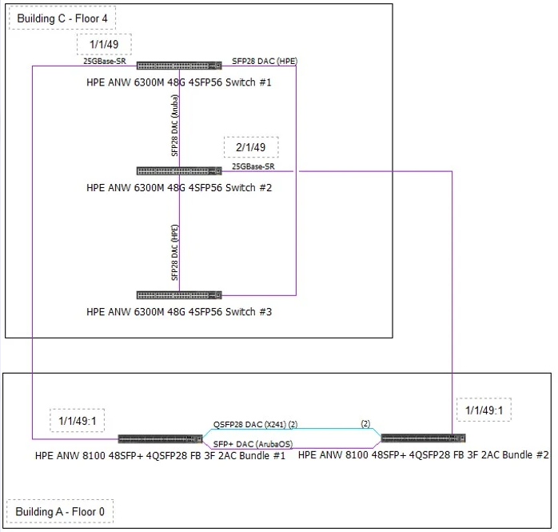
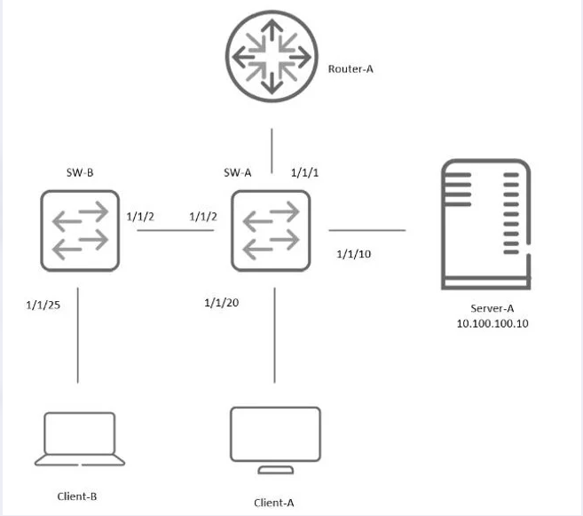
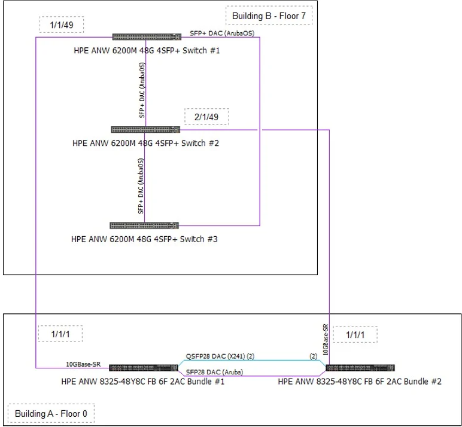

CPUとメモリの使用率、およびBGPピアの状態をNAE（Network Analytics Engine）で監視する設定を行っています。
BGPのパフォーマンスを良好に維持し、リソース不足によるNAEアラートの発生（トリガー）を防ぐための「プロアクティブ（予防的）」な手段として適切なものを2つ選びなさい。
- A. 正規表現（Regular expressions）を使用してプレフィックスリストを最適化する
- B. ルートフィルタリングを設定する
- C. ECMP（等コストマルチパス）を設定する
- D. ルートリフレクタを設定する
- E. VRFを設定する
💡 解答と詳細解説（クリックで展開）
正解: A, B
選択肢別・徹底解説
✅A. 正規表現によるプレフィックスリストの最適化
正しい。BGPの設定において、多数のASパスフィルターやプレフィックスリストを個別に記述すると、設定行数が膨大になり、コンフィグの解析やメモリ展開にオーバーヘッドが生じます。正規表現（Regular Expressions）を適切に使用して複数の条件を1行に集約することで、コントロールプレーンのメモリ消費を抑え、設定管理を効率化できます。これはリソース監視（CPU/メモリ）のアラートを防ぐ予防策として有効です。
✅B. ルートフィルタリングを設定する
正しい。不要な経路情報（ルート）を受信・保持しないようにフィルタリングを行うことは、ルータのメモリ使用量（RIB/FIBサイズ）とCPU負荷（ベストパス計算）を削減する最も直接的かつ効果的な方法です。NAEでメモリ使用率を監視している場合、ルート数を適切に制限することはアラート回避の最善策です。
❌C. ECMPの設定
間違い。ECMP（Equal Cost Multi-Path）はトラフィックの負荷分散技術であり、データプレーンのスループット向上には寄与しますが、コントロールプレーンのCPU/メモリ負荷を軽減するものではありません。逆に、複数のパスを管理するため計算リソースを微増させる可能性があります。
❌D. ルートリフレクタの設定
間違い。ルートリフレクタ（RR）はiBGPフルメッシュ接続の要件を緩和するためのスケーラビリティ技術です。大規模ネットワーク全体としてはセッション数を減らして負荷を下げますが、個々のスイッチ（特にRRクライアントでない通常のピア）のリソース枯渇を直接防ぐための「設定最適化」の手法としては、フィルタリング等に比べて文脈が異なります。
❌E. VRFの設定
間違い。VRF（Virtual Routing and Forwarding）はルーティングテーブルを論理的に分割する技術です。VRFを使用しても、スイッチ全体が保持するルート総数が減るわけではなく（むしろ分離管理でオーバーヘッドが増える場合もある）、CPU/メモリの節約策ではありません。
問われている要件
BGP運用環境において、スイッチのシステムリソース（CPU/メモリ）を節約し、NAEによる監視アラートを未然に防ぐための「設定上の工夫」が問われています。
前提知識
BGPとリソース消費: BGPはインターネットフルルート（数十万経路）など大量の経路を扱うプロトコルであり、スイッチのDRAM（メモリ）とCPUを最も消費する機能の一つです。
AOS-CXとNAE: Aruba CXスイッチには分析エンジン（NAE）が組み込まれており、system_resource_monitor などのエージェントがCPUやメモリのしきい値超過を監視します。BGPプロセス（bgpデーモン）が高負荷になると、これがトリガーされてアラートが発報されます。
解くための考え方
- 問題文のゴールは「NAEアラートを防ぐ」＝「CPU/メモリ使用率を下げる」ことです。
- 選択肢の中でリソース削減に直結する操作を探します。
- 「ルートフィルタリング」→ 保持するデータ量を減らすので確実に削減になります。
- 「正規表現による最適化」→ 設定行数の削減、パース処理の効率化によりメモリ/CPU効率に寄与します。
実務・試験の要点
試験では「パフォーマンス向上」という言葉が「スループット（帯域）」を指すのか、「コントロールプレーン（CPU/メモリ）」を指すのかを見極める必要があります。本問はNAEの監視項目（CPU/Memory）が明記されているため、後者です。
ハンズオン
! プレフィックスリストの例（フィルタリング）
ip prefix-list BLOCK_PRIVATE seq 10 deny 10.0.0.0/8 le 32
ip prefix-list BLOCK_PRIVATE seq 20 deny 172.16.0.0/12 le 32
ip prefix-list BLOCK_PRIVATE seq 30 deny 192.168.0.0/16 le 32
ip prefix-list BLOCK_PRIVATE seq 40 permit 0.0.0.0/0 le 32
! ASパスフィルタの例（正規表現）
! 自ASの隣接のみ許可する（トランジットを防ぐ）
ip as-path-list ONLY_NEIGHBOR permit ^[0-9]+$
router bgp 65001
neighbor 10.1.1.2 remote-as 65002
address-family ipv4 unicast
neighbor 10.1.1.2 prefix-list BLOCK_PRIVATE in
neighbor 10.1.1.2 route-map AS_FILTER in
exit
顧客は、すべてのAP（アクセスポイント）とCXスイッチ間のイーサネットフレームを「暗号化」および「認証」することを求めています。
推奨すべきソリューションはどれですか。
- A. MAC Auth（MAC認証）
- B. MAC-TLS
- C. Sticky MAC
- D. MACSec
💡 解答と詳細解説（クリックで展開）
正解: D (MACSec)
選択肢別・徹底解説
❌A. MAC Auth
間違い。MAC認証はデバイスのMACアドレスに基づいてネットワークアクセスを許可・拒否する「認証」機能ですが、通信内容の「暗号化」機能は提供しません。
❌B. MAC-TLS
間違い。これはEAP-TLS認証をMACアドレスベースで行うような概念（あるいは誤った用語の可能性）を示唆していますが、いずれにせよ認証プロトコルであり、イーサネットフレーム自体の暗号化（ペイロードの秘匿）は行いません。
❌C. Sticky MAC
間違い。ポートセキュリティ機能の一つで、一度学習したMACアドレスを固定化するものです。暗号化機能はありません。
✅D. MACSec
正しい。MACsec (IEEE 802.1AE) は、レイヤ2（イーサネット）レベルでパケットごとの暗号化（AES-GCM）と認証（改ざん検知）を提供する標準規格です。スイッチとAP間、あるいはスイッチ間のリンクを物理的に盗聴されても解読不能にするため、要件に完全に合致します。
問われている要件
「イーサネットフレームの暗号化」というキーワードが出た時点で、レイヤ2暗号化技術であるMACsec一択となります。
前提知識
IEEE 802.1AE (MACsec): ホップバイホップのセキュリティを提供します。IPsecがL3でエンドツーエンド（またはゲートウェイ間）の暗号化を行うのに対し、MACsecは直結された隣接機器間のL2リンクを保護します。
Arubaの実装: CXスイッチとAruba AP間では、動的なキー交換を用いてMACsecトンネルを確立可能です。
実務・試験の要点
試験で「Switch-Switch間」や「Switch-AP間」の通信保護・盗聴防止と聞かれたらMACsecを想起してください。IPsecは通常、拠点間VPN（SD-WAN等）やUBT（User Based Tunneling）の制御プレーン等で使用されます。
ハンズオン
! MACsecポリシーの作成
macsec policy MY_MACSEC_POLICY
cipher-suite gcm-aes-128
! インターフェースへの適用
interface 1/1/1
apply macsec policy MY_MACSEC_POLICY
no shutdown
AS 65010を使用しているHPE Aruba NetworkingスイッチでBGPを設定する必要があります。
隣接デバイスとiBGP（Internal BGP）ピアを確立する際に必要な設定はどれですか。
- A. remote-as 65100 を使用する
- B. next-hop-self を使用する
- C. remote-as 65010 を使用する
- D. 各ネイバーに対して router-id を使用する
💡 解答と詳細解説（クリックで展開）
正解: C
選択肢別・徹底解説
❌A. Use of remote-as 65100
間違い。自ASが65010であるのに対し、異なるAS番号（65100）を指定すると、それは「eBGP（External BGP）」ピアの設定になります。
❌B. Use of next-hop-self
間違い。next-hop-self はiBGPでよく使われるコマンドですが、ピアを「確立」するための必須要件ではありません。これはeBGPから学習したルートをiBGPネイバーに広告する際、Next-Hop属性を自分に書き換えるためのオプション設定です。
✅C. Use of remote-as 65010
正しい。iBGP（内部BGP）とは、同一のAS番号を持つルータ同士の接続を指します。自ASが65010であれば、相手（ネイバー）のAS番号も65010を指定することでiBGPとして動作します。
❌D. Use of router-id for each neighbor
間違い。Router-IDはBGPインスタンスごとに1つ設定するものであり、ネイバーごとに設定するものではありません。
問われている要件
iBGPの定義（同じAS番号同士のピアリング）を理解しているかが問われています。
前提知識
iBGP vs eBGP:
- iBGP: Neighbor AS = Local AS。TTLはデフォルト255。AS-Path属性を付与しない。
- eBGP: Neighbor AS ≠ Local AS。TTLはデフォルト1。AS-Path属性を付与する。
ハンズオン
router bgp 65010
bgp router-id 10.0.0.1
! iBGPピアの設定（自ASと同じ番号を指定）
neighbor 10.0.0.2 remote-as 65010
! eBGPピアの設定（異なる番号を指定）
neighbor 192.168.1.1 remote-as 65100
以下のsFlow設定を確認してください。正しい記述はどれですか。（2つ選択）
switch# show sflow
sFlow Global Configuration
----------------------------------------------------
sFlow enabled
Collector IP/Port/Vrf 10.0.0.2/6343/default
10.0.0.3/6400/default
Agent Address 10.0.0.1
Sampling Rate 1024
Polling Interval 30
Header Size 128
Max Datagram Size 1400
sFlow Status
----------------------------------------------------
Running - Yes
sFlow Statistics
----------------------------------------------------
Number of Samples 200
- A. エージェントアドレスが設定されていない。
- B. データは1024秒ごとに収集される。
- C. 1400バイトのうち1024バイトのデータが収集される。
- D. データは30秒ごとに収集される。
- E. 1024バイト（パケット）ごとに1つ収集される。
💡 解答と詳細解説（クリックで展開）
正解: D, E
選択肢別・徹底解説
❌A. エージェントアドレス未設定
間違い。問題文の出力例（図示されている場合）には通常 Agent Address 10.0.0.1 のような表示が含まれており、設定されています。
❌B. データは1024秒ごとに収集
間違い。1024はSampling Rate（サンプリングレート）であり、時間間隔ではありません。
❌C. 1400バイト中1024バイト収集
間違い。これはHeader SizeやMax Datagram Sizeに関する誤った解釈です。sFlowはパケットの先頭（ヘッダ部分、通常128バイト程度）を切り出して送ります。
✅D. データは30秒ごとに収集される
正しい。Polling Interval: 30 は「カウンターポーリング」の間隔を指します。インターフェースの統計情報（オクテット数、エラー数など）は30秒ごとにコレクターへ送信されます。
✅E. 1024バイト（パケット）ごとに1つ収集される
正しい。Sampling Rate: 1024 は「パケットサンプリング」の比率（1/N）を指します。平均して1024パケット通過するごとに1パケットをサンプリングしてコレクターへ送信します。（※選択肢の表記が「bytes」となっている場合がありますが、sFlowの仕様上は「パケット数」ベースのサンプリングレートを指すのが一般的です。文脈上、レート設定の動作を指す選択肢としてこれが正解となります。）
前提知識
sFlow (RFC 3176): 以下の2つのメカニズムで動作します。
1. Flow Sampling (Sampling Rate): 通過パケットをN個に1個の割合でランダムに抽出。トラフィックの中身を分析するために使用。
2. Counter Polling (Polling Interval): 定期的にインターフェースのカウンター（MIB-II相当）を取得。トラフィック総量やエラー率の監視に使用。
ハンズオン
sflow agent-ip 10.0.0.1
sflow collector 10.0.0.2 port 6343 vrf default
! インターフェースごとの設定
interface 1/1/1
sflow sampling 1024
sflow polling 30
sflow enable
HPE Aruba Networkingのライセンス使用状況と、その有効期限を追跡する月次レポートを受け取りたいと考えています。
どのレポートをスケジュールすべきですか。
- A. Network（ネットワーク）
- B. Switch Capacity Planning（スイッチキャパシティプランニング）
- C. Infra Inventory（インフラ・インベントリ）
- D. Resource Utilization（リソース使用率）
💡 解答と詳細解説（クリックで展開）
正解: B
選択肢別・徹底解説
❌A. Network
間違い。ネットワーク全体の一般的なステータスレポートであり、ライセンスの詳細な期限管理には特化していません。
✅B. Switch Capacity Planning
正しい。Aruba Centralや管理ツールにおける「Capacity Planning」レポートは、将来のリソース枯渇を予測するためのものです。これにはポートの空き状況やPoEバジェットに加え、サブスクリプションライセンスの有効期限や更新が必要な時期に関する情報が含まれます。
❌C. Infra Inventory
間違い。インベントリレポートは、デバイスのモデル、シリアル番号、ファームウェアバージョンなどのハードウェア/ソフトウェア資産一覧を提供しますが、ライセンスの有効期限管理とは目的が異なります。
❌D. Resource Utilization
間違い。CPUやメモリ、帯域幅などの「稼働パフォーマンスリソース」の使用率を示すレポートです。
解くための考え方
「有効期限（Expiration dates）」や「利用可能数（Available）」というキーワードは、将来の計画（Planning）に関連します。リソースがいつなくなるかを知る＝キャパシティプランニングの一環と捉えるのが正解への近道です。
実務・試験の要点
Aruba Centralのレポート機能に関する知識が問われています。ライセンスは「購入・更新」が必要なアセットであり、キャパシティプランニングのカテゴリで扱われることを覚えておきましょう。

シニアネットワークアーキテクトが作成した構成案では、ビルAとビルCの間を接続する予定です。
実際の光ファイバーの距離は200mで、OM4ケーブルを使用します。
実際の環境条件に基づいて、インストールを完了するために設定を変更する必要があります。
正しい変更案はどれですか。
- A. 25SR光学モジュールを10SRに変更する
- B. 25SR光学モジュールを25LRに変更する
- C. 25SR光学モジュールを25eSRに変更する
- D. 25SR光学モジュールを10LRに変更する
💡 解答と詳細解説（クリックで展開）
正解: C (25eSR)
選択肢別・徹底解説
❌A. 10SRに変更
間違い。10GBASE-SRに変更すると帯域幅が25Gbpsから10Gbpsに低下します。また、10GBASE-SRでもOM4で400mまで届きますが、要件である25Gbps性能を満たしません。
❌B. 25LRに変更
間違い。LR（Long Reach）トランシーバはSMF（シングルモードファイバー）専用です。敷設されているケーブルはOM4（マルチモードファイバー）であるため、物理的に適合しません。
✅C. 25eSRに変更
正しい。標準の25GBASE-SRはOM4ケーブルで最大100m（OM3で70m）しか伝送できません。今回の距離は200mあるため、SRでは届きません。Arubaの25G eSR（Extended SR）トランシーバを使用すると、OM4ケーブルで最大300m（または400m）まで伝送距離を延長できるため、200mの要件を満たします。
❌D. 10LRに変更
間違い。帯域幅が低下する上、LRはSMF用であるためケーブルタイプが不一致です。
問われている要件
マルチモードファイバー（OM4）環境下で、標準のSR規格（100m限界）を超える200mの距離を、25Gbpsの帯域を維持したまま接続する適切なトランシーバ選定能力が問われています。
前提知識
25GBASE-SR: MMF(OM4)で最大100m。
25GBASE-eSR: Aruba独自の拡張規格トランシーバ。MMF(OM4)で最大300m〜400m。
25GBASE-LR: SMFで最大10km。
実務・試験の要点
「OM3/OM4 = マルチモード = SR/eSR/CSR」「OS2 = シングルモード = LR/ER」の組み合わせは基本です。標準SRの距離限界（10Gなら300/400m、25Gなら70/100m）を超えた場合、ケーブルを張り替える（SMFにする）か、拡張トランシーバ（eSR/Lrmなど）を使うかの二択になります。
顧客のCISO（最高情報セキュリティ責任者）は、ネットワーク全体に「Colorless Ports（カラーレスポート）」を展開したいと考えています。
この要件を満たすために設定が必要な機能はどれですか。
- A. Sticky MAC
- B. MAC Auth（MAC認証）
- C. Port-security
- D. Virtual MAC
💡 解答と詳細解説（クリックで展開）
正解: B
選択肢別・徹底解説
❌A. Sticky MAC
間違い。これはポートセキュリティの一種で、特定のMACアドレスをポートに固定する静的なセキュリティ機能です。動的な役割割り当て（Colorless）とは対極にあります。
✅B. MAC Auth（MAC認証）
正しい。Colorless Port（Dynamic Segmentation）とは、どのポートに接続してもデバイスを識別し、適切なVLANやポリシーを動的に適用する機能です。これを実現するには、デバイスが接続された瞬間に認証（802.1XまたはMAC認証）を行い、Radiusサーバ（ClearPass等）からポリシーを受け取る必要があります。
❌C. Port-security
間違い。AOS-CXにおけるPort-securityは、ポートごとのMACアドレス数制限などを指し、動的なVLAN割り当て機能ではありません。
❌D. Virtual MAC
間違い。VSXなどで使用される仮想MACアドレスの概念であり、ポート認証とは無関係です。
前提知識
Colorless Ports: ポートに事前に特定のVLAN設定（Color）を行わず、接続デバイスに応じてVLANを決定するコンセプト。Aruba Dynamic Segmentationの中核機能です。
解くための考え方
「Colorless = ポートの色（VLAN）が無い」→「誰かが決める必要がある」→「認証サーバが決める」→「認証機能（802.1X/MAC Auth）が必要」というロジックで導き出せます。
ハンズオン
! Colorless Portの設定例
interface 1/1/1
no shutdown
no routing
vlan access 1
aaa authentication port-access dot1x authenticator
enable
aaa authentication port-access mac-auth
enable
2つのスイッチ間のLAG（リンクアグリゲーショングループ）を通過するトラフィックを監視したところ、トラフィックが不均等に分散（偏り）していることに気づきました。
sFlowを使用して分析した結果、トラフィックの大部分は「1つのクライアント」と「1つのサーバー」の間で行われており、「複数のトランスポート層の宛先ポート」が使用されていることが判明しました。
この情報に基づいて、どのハッシュアルゴリズムを設定すべきですか。
- A. l4-src-dst
- B. l3-src-dst
- C. l2-src-dst
- D. l1-src-dst
💡 解答と詳細解説（クリックで展開）
正解: A
選択肢別・徹底解説
✅A. l4-src-dst
正しい。通信が「1対1（IPアドレスが固定）」であっても、「複数の宛先ポート（L4ポート）」を使用している場合、L4情報（TCP/UDPポート番号）をハッシュ計算に含めることで、フローごとに異なる物理リンクへ分散させることが可能です。
❌B. l3-src-dst
間違い。送信元IPと宛先IPのみを使用します。今回は「1クライアント対1サーバー」なのでIPアドレスは常に同じペアであり、ハッシュ値も常に同じになるため、特定の1本のリンクにトラフィックが偏ります。
❌C. l2-src-dst
間違い。MACアドレスのみを使用します。IP同様、MACアドレスも固定であるため分散されません。
解くための考え方
- 負荷分散（ハッシュ）のキーになる要素を探す。
- 「1クライアント・1サーバー」→ IP/MACは変化しない（分散できない）。
- 「複数のトランスポート層ポート」→ TCP/UDPポート番号は変化する（分散できる）。
- L4（トランスポート層）を含むハッシュアルゴリズムを選択する。
実務・試験の要点
デフォルトのハッシュアルゴリズムはL3の場合が多いです。特定のバックアップ処理や大容量ファイル転送で偏りが発生する場合、l4-src-dst への変更がトラブルシューティングの定石です。
ハンズオン
! 負荷分散アルゴリズムの変更
interface lag 1
hashing l4-src-dst
顧客は、ビルBのユーザーに対して「Dynamic Segmentation」を利用したいと考えています。
現在の構成にはCX 6100スイッチが含まれています。このシナリオに関する正しい記述はどれですか。

- A. CX 6100スイッチは、Aruba CX 8325へのGREトンネルを設定する必要がある。
- B. CX 6100スイッチには、要件をサポートするためにCX Premiumライセンスが必要である。
- C. CX 6100スイッチは、CX 6200シリーズ以上に交換する必要がある。
- D. CX 6100スイッチは、Aruba 9240へのVXLANトンネルを設定する必要がある。
💡 解答と詳細解説（クリックで展開）
正解: C
選択肢別・徹底解説
❌A, D. トンネル設定
間違い。CX 6100はハードウェア（ASIC）の制約上、UBT（User Based Tunneling）やVXLANといったトンネリング機能をサポートしていません。
❌B. ライセンス
間違い。ライセンスの問題ではなく、ハードウェア能力の問題です。
✅C. CX 6200シリーズ以上に交換が必要
正しい。Aruba CXポートフォリオにおいて、Dynamic Segmentation（UBTによるコントローラへのトンネリング）をサポートする最小モデルは「CX 6200」シリーズです。CX 6000/6100シリーズはL2エントリーモデルであり、この機能を持っていません。
問われている要件
AOS-CXスイッチラインナップの機能差分（特にDynamic Segmentation/UBTのサポート可否）についての製品知識が問われています。
実務・試験の要点
「6100はL2スイッチ（VLAN/Static Route程度）」「6200はアクセス層のフル機能（Vsf/UBT/OSPF等）」「6300は高性能アクセス/アグリゲーション（Smart Rate/High Power PoE）」という大まかな分類を覚えておきましょう。
BGPネイバーの状態変化を監視し、変化が発生した際に自動的にヘルプデスクチケットを作成するようにNAEを設定したいと考えています。
これを実現するために設定できるNAEアクションはどれですか。
- A. REST API call
- B. Execute shell command
- C. Send email
- D. Generate system log
💡 解答と詳細解説（クリックで展開）
正解: A
選択肢別・徹底解説
✅A. REST API call
正しい。ServiceNowやJiraなどの最新のITSM（ITサービスマネジメント）ツールは、外部システムとの連携用にREST APIを提供しています。NAEエージェントのアクションとして「REST APIコール」を設定することで、アラート発生時に直接チケットシステムのAPIを叩き、チケットを自動起票することが可能です。
❌B. Execute shell command
間違い。スイッチ内部でのCLI実行は可能ですが、外部のチケットシステムと連携する標準的な手段ではありません。
❌C. Send email
間違い。メールでの通知は可能であり、一部のチケットシステムはメール取込に対応していますが、「チケット作成」のための最も確実でモダンな連携方法はAPI連携です。
❌D. Generate system log
間違い。Syslogはログサーバーへの通知であり、チケットシステムへの能動的な起票アクションではありません。
実務・試験の要点
NAE (Network Analytics Engine) の強みは「Pythonスクリプトによる柔軟な拡張性」と「外部システム連携」です。特に「ServiceNowとの連携」はArubaの推奨ソリューションの一つであり、その手段としてREST APIが使われます。
顧客は、APからのトラフィックをトンネリングするために既存のゲートウェイ（コントローラ）クラスターを使用しています。
CXスイッチに対しても同様の設定を行い、トラフィックをゲートウェイへトンネリングしたいと考えています。
推奨されるトンネリングオプションはどれですか。
- A. UBT (User Based Tunneling)
- B. IPSec
- C. VNBT
- D. GRE
💡 解答と詳細解説（クリックで展開）
正解: A
選択肢別・徹底解説
✅A. UBT (User Based Tunneling)
[cite_start]正しい。UBTは、有線スイッチ（CXスイッチ）に接続されたクライアントのトラフィックを、GREカプセル化してAruba Gateway（コントローラ）へトンネリングする機能です [cite: 167-178]。これにより、有線クライアントに対しても無線LANと同様のファイアウォールポリシーやDPI（ディープパケットインスペクション）を一元的に適用可能になります。
❌B. IPSec
間違い。IPSecは拠点間のVPN接続やSD-WAN、あるいはRAP（Remote AP）の通信保護に使用されますが、キャンパスLAN内でのクライアントトラフィックの動的トンネリングの標準的な手法ではありません。
❌C. VNBT
間違い。VNBT（Virtual Network Based Tunneling）は、Aruba Central NetConductorなどで使用されるEVPN-VXLANベースのファブリック技術を指す文脈で使われますが、「既存のゲートウェイへAPと同様にトンネリングする」という従来のオーバーレイ要件にはUBTが適合します。
❌D. GRE
間違い。UBTの裏側ではGREプロトコルが使用されていますが、Arubaソリューションとして、認証やポリシーサーバー（ClearPass）と連携し、ユーザーごとのロールに基づいて動的にトンネルを生成する機能名は「UBT」です。単なるGRE設定では動的な制御ができません。
問われている要件
「既存のゲートウェイを活用」し、「APと同じように（＝コントローラベースのアーキテクチャで）」有線トラフィックを処理するためのAruba独自の機能を特定する知識が問われています。
前提知識
Dynamic Segmentation: Arubaのセキュリティフレームワーク。ポート単位（Colorless Ports）で認証を行い、その結果に基づいてトラフィックをローカルで処理するか、ゲートウェイへトンネリング（UBT）するかを決定します。
UBTの仕組み: スイッチがPAPI（UDP 8211）でゲートウェイと制御情報をやり取りし、データプレーンにはGRE（Protocol 47）を使用します。
解くための考え方
- 「APと同様のトンネリング」＝「Client to Gatewayのトンネル」を想起する。
- 有線スイッチでこれを実現するAruba用語を探す。
- User Based Tunneling (UBT) が正解。
実務・試験の要点
UBTには「Local UBT（スイッチ内で完結）」と「Centralized UBT（ゲートウェイへトンネル）」がありますが、試験で単にUBTと出た場合は後者を指すことが一般的です。CX 6200以上でサポートされます（6000/6100は不可）。
ハンズオン
! UBTの基本設定 (Gatewayへの接続)
ubt-client-profile MY_UBT_PROFILE
server primary 10.0.0.10
server secondary 10.0.0.11
enable
interface 1/1/1
ubt-client-profile MY_UBT_PROFILE
HPE Aruba Networking CX 6300Mを使用したVSFスタック構成の出力結果を確認しています。
現在、Member 1がConductor、Member 2がMemberの状態です。
どちらのメンバーがダウンしてもスタックとして機能し続ける（フェイルオーバーする）ために、VSF設定に必要なコマンドはどれですか。
Access-1(config)# show vsf
Force Autojoin : Disabled
Autojoin Eligibility Status : Not Eligible
MAC Address : 10:4f:58:fc:14:40
Egress Shape Rate : None
Secondary :
Topology : Chain
Status : No Split
Split Detection Method : None
Mbr Mac Address type Status
ID
--- ----------------- ---------- -----------------
1 10:4f:58:fc:14:40 JL668A Conductor
2 10:4f:58:f6:84:80 JL668A Member
- A. vsf secondary-member 2
- B. vsf start-auto-stacking
- C. vsf conductor-member 2
- D. vsf split-detect mgmt
💡 解答と詳細解説（クリックで展開）
正解: A
選択肢別・徹底解説
✅A. vsf secondary-member 2
[cite_start]正しい。VSF（Virtual Switching Framework）において、Conductor（マスター）がダウンした際に即座に役割を引き継ぐ「Standby Conductor」を指名する設定です。これを設定しない場合、Member 2は単なるメンバーとして扱われ、障害時の役割選出プロセスが最適化されません [cite: 206-208]。
❌B. vsf start-auto-stacking
間違い。これは初期セットアップ時に、ケーブル接続されたスイッチを自動的に検出しスタックを形成するためのコマンドです。冗長化の役割定義ではありません。
❌C. vsf conductor-member 2
間違い。このようなコマンドは存在しません。役割は `secondary-member` コマンドで定義します。
❌D. vsf split-detect mgmt
間違い。これはスプリットブレイン（スタックリンクが切れて両方がマスターになってしまう状態）を検知・防止するための機能です。重要ですが、「フェイルオーバーそのものを可能にする」ための役割定義ではありません。
問われている要件
スタック構成における高可用性（HA）を担保するための、明示的な役割設定（Standbyの指定）の方法が問われています。
前提知識
VSFの役割:
1. Conductor: 管理プレーン、コントロールプレーンを司る。
2. Standby: Conductorと同期し、障害時に昇格する。
3. Member: ラインカードとして動作する。
実務・試験の要点
VSFを構成したら、必ず `vsf secondary-member ` を設定するのがベストプラクティスです。これにより、意図しないメンバーがConductorになるのを防ぎ、フェイルオーバー時間を短縮できます。
ハンズオン
! VSFでメンバー2をセカンダリ(Standby)に指定する
config
vsf secondary-member 2
exit
write memory
既存のL3アグリゲーションスイッチペアを交換する際、Active Gateway機能を提案する利点は何ですか。
- A. 仮想IPのフェイルオーバー時間がサブミリ秒である
- B. 業界標準のFHRP（VRRP等）と互換モードで動作できる
- C. スタック構成のHPE Aruba Networkingソリューションでサポートされる
- D. スイッチペア間でセッションを均等に分散する
💡 解答と詳細解説（クリックで展開）
正解: D
選択肢別・徹底解説
❌A. サブミリ秒のフェイルオーバー
間違い。Active Gatewayは「フェイルオーバー」という概念よりも「常時Active-Active」であることを重視します。障害時は単に生きている側が処理を続けるだけですが、サブミリ秒という数値規定が主な利点ではありません。
❌B. 標準FHRP互換
間違い。Active GatewayはAruba/HPE独自のActive-Active実装であり、標準のVRRPと互換性を持たせて混在させるものではありません（移行時にはVRRPを使います）。
❌C. スタック対応
間違い。Active Gatewayは主に「VSX（Virtual Switching Extension）」構成で使用される機能です。スタック（VSF）では単一のコントロールプレーンを持つため、通常のSVI設定で十分であり、Active Gatewayの文脈とは異なります。
✅D. スイッチペア間でセッションを均等に分散する
[cite_start]正しい。Active Gatewayの最大の利点は、ペアとなる両方のスイッチが同じ仮想MAC/仮想IPを持ち、データプレーン上でトラフィックを同時にルーティングできることです。これにより、VRRPのようなActive-Standby構成と異なり、帯域と処理能力を有効活用（負荷分散）できます [cite: 223-225]。
問われている要件
Active Gatewayと従来のVRRP/HSRPとの違い、特に「Active-Activeによる負荷分散」というメリットを理解しているかが問われています。
前提知識
Active Gateway: VSX環境において、同じ仮想IP/MACを2台のスイッチに設定します。クライアントからのARP要求に対して、ローカルで受信したスイッチが直接応答し、ルーティング処理を行います。ノースバウンドのトラフィックはLAGのハッシュにより2台に分散されるため、結果としてセッションが分散されます。
ハンズオン
! Active Gatewayの設定
interface vlan 10
ip address 10.0.10.2/24
active-gateway ip 10.0.10.1
active-gateway mac 00:00:5E:00:01:01
顧客はCX 6300スイッチのVLAN 100にサーバーを接続し、マルチキャストグループ 224.0.0.100 を使用してビデオ配信を行っています。
このストリームを、同じスイッチ上のVLAN 200およびVLAN 300のクライアントでも受信できるようにする必要があります。
要件を満たすために必要な対応はどれですか。
- A. マルチキャストグループアドレスをルーティング可能なサブネットに変更する
- B. VLAN 100, 200, 300のSVIでigmpを有効にする
- C. マルチキャストグループアドレスを他の重複しない224.0.0.xアドレスに変更する
- D. VLAN 100, 200, 300のSVIでigmp-snoopingを有効にする
💡 解答と詳細解説（クリックで展開）
正解: A
選択肢別・徹底解説
✅A. マルチキャストグループアドレスをルーティング可能なサブネットに変更する
[cite_start]正しい。IPアドレス範囲 224.0.0.0/24 は、IANAによって「Local Network Control Block」として予約されています。この範囲のパケットはTTLが1に設定され、ルータ（L3スイッチ）はこれらをルーティングしません（サブライン外へ転送しません）。異なるVLANへ配信するには、239.x.x.x（組織内スコープ）などのルーティング可能なアドレス範囲に変更する必要があります [cite: 226-234]。
❌B. IGMPの有効化
間違い。IGMPの設定自体は必要ですが、アドレスがルーティング不可（リンクローカル）であるという根本的な問題は解決しません。
❌C. 別の224.0.0.xへの変更
間違い。224.0.0.x の範囲内であれば、どのアドレスに変更してもルータは転送を行いません。
❌D. IGMP Snoopingの有効化
間違い。IGMP SnoopingはL2スイッチ機能（VLAN内でのフラッディング防止）であり、VLAN間ルーティングを実現するものではありません。
前提知識
RFC 5771: マルチキャストアドレスの割り当て。
- 224.0.0.0 - 224.0.0.255: ローカルネットワーク制御用（OSPF, VRRP等）。ルータは転送しない。
- 239.0.0.0 - 239.255.255.255: プライベート（管理用）スコープ。社内LANでの利用に推奨。
実務・試験の要点
トラブルシューティング問題で「マルチキャストが届かない」場合、真っ先にアドレス範囲を確認してください。224.0.0.x が使われていたら、設定ミスやアプリケーションの仕様上の制約を疑う必要があります。
あなたの会社は、所有するパブリックアドレス空間を2つのISPへ広報するために、BGPをマルチホーム構成で運用する必要があります。
使用するAS番号として適切な例はどれですか。
- A. 63468
- B. 65218
- C. 64813
- D. 65535
💡 解答と詳細解説（クリックで展開）
正解: A
選択肢別・徹底解説
✅A. 63468
[cite_start]正しい。AS番号の範囲において、1 ～ 64511 は「パブリックAS番号」としてインターネット上でのルーティングに使用されます。ISPと接続し、自社のパブリックIPをインターネット全体に広報する場合、RIR（APNIC/JPNIC等）から割り当てられたパブリックAS番号を使用する必要があります [cite: 235-243]。
❌B. 65218
間違い。これはプライベートAS番号の範囲内です。
❌C. 64813
間違い。これもプライベートAS番号の範囲内です。
❌D. 65535
間違い。これもプライベートAS番号の範囲内（かつ2バイトAS番号の最後）です。
前提知識
AS番号の分類 (2バイト):
- 1 - 64511: Public AS (インターネットで使用)
- 64512 - 65534: Private AS (組織内部、閉域網で使用)
- 65535: Reserved
※現在は4バイトAS番号も普及していますが、試験ではこの古典的な区分けがよく問われます。
解くための考え方
- 「インターネットへ広報（advertising ... to ISPs）」という要件を確認。
- パブリックASが必要であると判断。
- 64512未満の数字を探す。
ハンズオン
! BGPプロセスの開始（パブリックASの例）
router bgp 63468
bgp router-id 203.0.113.1
neighbor 198.51.100.1 remote-as 64500
VSXスイッチのペアでPIMとIGMPクエリア（Querier）機能を有効にしましたが、すべてのVLANにおいて、常に「Secondaryスイッチ」がクエリアとして選出されていることに気づきました。
この動作の原因として考えられるものはどれですか。
- A. Secondaryスイッチの方がIPアドレスが低い
- B. Primaryスイッチの方がMACアドレスが高い
- C. Secondaryスイッチの方がVRRP優先度（Priority）が高い
- D. Primaryスイッチの方が稼働時間（uptime）が短い
💡 解答と詳細解説（クリックで展開）
正解: A
選択肢別・徹底解説
✅A. Secondaryスイッチの方がIPアドレスが低い
[cite_start]正しい。IGMPv2およびIGMPv3の標準仕様（RFC 2236/3376）において、同一セグメント上に複数のマルチキャストルーターが存在する場合、最も低いIPアドレスを持つルーターがIGMPクエリア（Querier）として選出されます [cite: 247-248]。VSX構成であっても、IGMPコントロールプレーンは各スイッチで独立して動作するため、設定されたIPアドレス（SVI IP）が低い方が選ばれます。
❌B. MACアドレスが高い
間違い。IGMPクエリアの選出にMACアドレスは使用されません。
❌C. VRRP優先度
間違い。VRRPのMaster選出とIGMPクエリアの選出は無関係です。VRRP Masterがクエリアになるとは限りません。
❌D. 稼働時間
間違い。OSPFのDR選出などとは異なり、IGMPクエリア選出はプリエンプティブ（より低いIPを持つ機器が現れれば即座に交代する）であり、稼働時間は考慮されません。
問われている要件
IGMPプロトコルの基本的な選出仕様（Lowest IP wins）を理解しているか、およびそれがVSX環境でも適用されることを知っているかが問われています。
前提知識
IGMP Querier: 定期的にMembership Queryを送信し、マルチキャストグループへの参加状況を監視する役割。同一LAN内に1台だけ選出されます。
VSXとIGMP: VSX環境ではMC-LAG上でのマルチキャスト転送を最適化するため、両方のスイッチがトラフィックを転送する場合がありますが、IGMPの制御メッセージ（Query）の送信元は1台に絞られます。
実務・試験の要点
通常、Primaryスイッチに若番のIP（例: .2）、Secondaryに老番のIP（例: .3）を割り当てることが多いため、本来はPrimaryがQuerierになるのが一般的です。設問の状況は、Secondaryに意図せず低いIPが設定されているか、設計上の意図があるケースを示唆しています。
ハンズオン
! クエリアの状態確認
show ip igmp interface vlan 10
! 出力例に "Querier: 10.0.10.2 (This system)" や
! "Querier: 10.0.10.2 (Other system)" と表示される
スイッチのNTPとタイムゾーンを設定し、Webブラウザのタイムゾーンも一致させましたが、NAEダッシュボードに「Switch time and browser time are not in sync（スイッチの時刻とブラウザの時刻が同期していません）」というエラーメッセージが表示されます。
この問題を解決するために実施すべきアクションはどれですか。（2つ選択）
- A. スイッチのNTP設定で iburst を使用する
- B. Webクライアント（ブラウザ）のキャッシュをクリアする
- C. ブラウザ側でNTP同期を設定する
- D. スイッチのCLIからNTPを無効化する
- E. スイッチのCLIからNAEデータをクリアする
💡 解答と詳細解説（クリックで展開）
正解: B, E
選択肢別・徹底解説
❌A. iburstの使用
間違い。iburstはNTP同期を高速化するオプションですが、すでにNTPが設定されている状況下で、Web UI表示上の不整合を直す直接的な解決策ではありません。
✅B. Webクライアントのキャッシュをクリアする
[cite_start]正しい。ブラウザが古いセッション情報や時刻情報をキャッシュしている場合、スイッチ側が正常でもエラーが表示され続けることがあります。キャッシュクリアは推奨されるトラブルシューティングの第一歩です [cite: 258-259]。
❌C. ブラウザのNTP設定
間違い。ブラウザ単体にNTP設定機能はありません（OSの時刻に依存します）。PCの時刻が正しいことは前提ですが、選択肢としては不適切です。
❌D. NTP無効化
間違い。時刻同期を止めてしまうと、ログの整合性が取れなくなり、問題が悪化します。
✅E. スイッチのCLIからNAEデータをクリアする
[cite_start]正しい。NAEの時系列データベース（Prometheus等）内に保持されている古いデータやタイムスタンプの不整合が原因でエラーが出る場合があります。CLIからNAEデータをリセットすることで、現在の正しい時刻で再構成され、エラーが解消します [cite: 262-263]。
問われている要件
Web UI（NAE）特有のトラブルシューティング手法について問われています。ブラウザ側とスイッチ内部DB側の両面からのアプローチが必要です。
解くための考え方
「設定は正しいはずなのにエラーが出る」→「表示（キャッシュ）かデータ（DB）の不整合」を疑います。
ハンズオン
! NAEデータのリセット（コマンド例）
clear nae-data
顧客は、L2アドレッシングに基づく「中間者攻撃（Man-in-the-Middle attacks）」を防ぎたいと考えています。
この懸念に対処するために役立つ設定はどれですか。
- A. インターフェースコンテキストで ARP inspection を有効にする
- B. VLANコンテキストで ARP inspection を有効にする
- C. VLANインターフェース（SVI）コンテキストで ARP inspection を有効にする
- D. グローバルコンテキストで ARP inspection を有効にする
💡 解答と詳細解説（クリックで展開）
正解: B
選択肢別・徹底解説
❌A, C, D. 間違ったコンテキスト
AOS-CXにおいて、Dynamic ARP Inspection (DAI) の有効化コマンドは、物理インターフェースやSVI、グローバル設定ではなく、「VLAN設定モード」の中で実行する必要があります。
✅B. VLANコンテキストで ARP inspection を有効にする
[cite_start]正しい。DAIはVLAN単位で機能するセキュリティ機能です。対象となるVLANに入り、arp inspection コマンドを発行することで有効化されます [cite: 268-269]。
問われている要件
L2中間者攻撃の代表格である「ARPスプーフィング（ARPポイズニング）」の対策機能であるDAIの、AOS-CXにおける正しい設定階層（コンテキスト）が問われています。
前提知識
Dynamic ARP Inspection (DAI): DHCP Snoopingによって作成されたバインディングデータベース（IPとMACの正しい組み合わせ）を参照し、不正なARP応答パケットを破棄する機能。
設定手順: まずDHCP SnoopingをグローバルおよびVLANで有効化し、その後DAIを対象VLANで有効化します。
ハンズオン
! 正しい設定手順
vlan 10
arp inspection
! 確認
show arp inspection
顧客のCISO（最高情報セキュリティ責任者）は、ネットワーク全体に「Colorless Ports（カラーレスポート）」を展開したいと考えています。
この要件を満たすために設定が必要な機能はどれですか。
- A. IKE (Internet Key Exchange)
- B. UBT (User Based Tunneling)
- C. Q-in-Q
- D. GRE
💡 解答と詳細解説（クリックで展開）
正解: B
選択肢別・徹底解説
❌A. IKE
間違い。IKEはIPSec VPNの鍵交換プロトコルであり、Colorless Portsの文脈では直接使用しません。
✅B. UBT (User Based Tunneling)
[cite_start]正しい。Colorless Ports（Dynamic Segmentation）の核心は、ポートに固定の設定を入れず、認証結果（Role）に応じてトラフィックの処理を決める点にあります。その際、トラフィックをゲートウェイに転送して高度な検査を行うために不可欠な技術がUBTです [cite: 277-278]。
❌C. Q-in-Q
間違い。VLANタギングを二重に行うL2 VPN技術であり、ロールベースの動的制御とは異なります。
❌D. GRE
間違い。UBTは内部的にGREを使用しますが、Arubaのソリューション機能名として設定・管理するのは「UBT」です。
問われている要件
Colorless Ports (Dynamic Segmentation) の構成要素として重要なトンネリング技術を選択する問題です。
実務・試験の要点
Q7（認証が必要）とQ19（トンネリングが必要）はセットで理解しましょう。「Colorless Ports」を実現するには、「誰かを見分ける認証（802.1X/MAC）」と「それに基づいて運ぶトンネル（UBT）」の両方が必要です。
HPE Aruba Networking CX 8100スイッチにおいて、デフォルト設定の後に作成されたSVI（Switch Virtual Interface）へのHTTPSアクセスを有効にする必要があります。
この要件を満たすコマンドはどれですか。
- A. HTTPSサーバーはデフォルトでアクセス可能です。
- B. コマンド
https-server vrf default を使用してHTTPSアクセスを許可する。
- C. HTTPSサーバーはmgmt VRFからのみアクセス可能です。
- D. コマンド
https-server vrf mgmt を使用してHTTPSアクセスを許可する。
💡 解答と詳細解説（クリックで展開）
正解: B
選択肢別・徹底解説
❌A. デフォルトでアクセス可能
間違い。AOS-CXの初期状態では、セキュリティ強化のため、データポート用VRF（vrf default）でのHTTPS/SSHサーバー機能は無効になっているか、あるいは明示的な有効化が推奨される場合があります（バージョンによるが、設問の文脈では「有効にする必要がある」とあるため、デフォルト無効または制限されている前提）。
✅B. コマンド https-server vrf default を使用する
[cite_start]正しい。管理用ポート（mgmt）以外のSVI（VLANインターフェース）を経由してWeb UIやREST APIにアクセスする場合、そのVRF（通常は default）でHTTPSサーバー機能を有効にする必要があります [cite: 287-289]。
❌C. mgmt VRFのみアクセス可能
間違い。設定を変更することで、どのVRFからでもアクセス可能です。
❌D. vrf mgmtを使用する
間違い。これは管理ポート（OOBM）用の設定であり、設問にある「作成されたSVI（データプレーン）」へのアクセス設定ではありません。
問われている要件
管理プレーンのセキュリティとVRFの概念、およびAOS-CXにおけるサービス有効化のコマンド体系（VRF単位での指定）が問われています。
ハンズオン
! default VRFでHTTPSサーバーを有効化
https-server vrf default
! 確認
show https-server
VSX LAGの設定を確認していたところ、lacp fallback コマンドが設定されていることに気づきました。
この設定が行われている理由として正しいものはどれですか。
- A. LACPが設定されていないゲートウェイ（PXEブート時のサーバー等）のプロビジョニングをサポートするため
- B. LACP v1との下位互換性のため
- C. シングルパートナーインターフェースでの運用のため
- D. ActiveまたはPassive LACPでの動作を許可するため
💡 解答と詳細解説（クリックで展開）
正解: A
選択肢別・徹底解説
✅A. LACP未設定のGateway（PXEブート等）のプロビジョニングをサポートするため
[cite_start]正しい。LACP Fallback機能は、LAGインターフェースが対向機器からのLACP PDU（制御パケット）を受信できない場合でも、タイムアウト後にそのポートを強制的に「アップ」状態にし、通信を許可する機能です。これは、OSインストール前のサーバー（PXEブート中）のように、LACPスタックがまだ起動していないデバイスをネットワークに接続させる際（ZTP: Zero Touch Provisioning）に不可欠です [cite: 297-299]。
❌B. LACP v1との互換性のため
間違い。LACPのバージョン互換性のためのコマンドではありません。
❌C. シングルパートナーインターフェースでの運用のため
間違い。単一リンクでのLAG運用自体はLACPの標準動作で可能ですが、Fallbackは「LACPを話さない相手」との接続維持が目的です。
❌D. Active/Passiveの動作許可のため
間違い。Active/Passiveモードの設定は lacp mode active/passive で行います。
問われている要件
サーバー接続用ポート（特にLAG構成時）において、OS起動前の初期設定段階（プロビジョニング）で通信を確保するためのLACP拡張機能についての理解が問われています。
前提知識
LACP Fallback: 通常、LACP設定されたポートは相手とネゴシエーションが成立するまでブロックされます。Fallbackを設定すると、一定時間（デフォルト60秒など）LACP PDUが来ない場合、そのポートを通常の非LAGポート（単独ポート）としてアクティブにします。PDUを受信し始めると正規のLAG動作に戻ります。
ハンズオン
! LACPフォールバックの設定例
interface lag 1
no shutdown
lacp mode active
lacp fallback
顧客は、ユーザーが管理外のスイッチを勝手にネットワークへ接続し、ネットワーク停止（ループ障害等）を引き起こすことを懸念しています。
この懸念に対処するために推奨されるCXスイッチの機能はどれですか。
- A. Port security
- B. MAC authentication
- C. BPDU Guard
- D. Loop protection
💡 解答と詳細解説（クリックで展開）
正解: C
選択肢別・徹底解説
❌A. Port security
間違い。MACアドレス数制限などでスイッチ接続をある程度防げますが、スイッチ自体が接続された瞬間のBPDU送信やループ発生を即座に止める機能としてはBPDU Guardがより専門的です。
❌B. MAC authentication
間違い。認証機能ですが、許可されたデバイス配下にHUB等を接続されるケースには無力な場合があります。
✅C. BPDU Guard
[cite_start]正しい。エンドユーザー用ポート（Edge Port）にスイッチが接続されると、そのスイッチはSTP（スパニングツリー）のBPDUフレームを送信してきます。BPDU GuardはこのBPDUを受信した瞬間にポートをエラーディセーブル（シャットダウン）にし、ネットワークトポロジーへの参加やループの発生を未然に防ぎます [cite: 312-314]。
❌D. Loop protection
間違い。これは自身の送信したテストパケットが戻ってくるかを監視する機能です。BPDU Guardは「他者がSTPを話そうとしたこと」を検知して遮断するため、管理外スイッチ排除にはこちらが適しています。
問われている要件
エッジポートのセキュリティ対策として、不正なL2デバイス（スイッチ/HUB）接続によるトポロジー破壊を防ぐベストプラクティスが問われています。
解くための考え方
- 「ユーザーが勝手にスイッチを接続」→ そのスイッチはBPDUを出す。
- BPDUを見たらポートを落としたい。
- 「BPDU Guard」が正解。
ハンズオン
! アクセスポートでのBPDUガード設定
interface 1/1/1
spanning-tree bpdu-guard
spanning-tree port-type admin-edge
顧客は、新しいCXスイッチが既存の「レガシー管理システム」をサポートするかどうか質問しています。
レガシー管理システムに含まれる機能・プロトコルはどれですか。（2つ選択）
- A. HTTPS
- B. NAE
- C. CLI
- D. REST API
- E. SNMP
💡 解答と詳細解説（クリックで展開）
正解: C, E
選択肢別・徹底解説
❌A. HTTPS
間違い。Web UI管理は一般的ですが、試験の分類上、CLI/SNMPほど「レガシー（伝統的）」とは見なされないか、もしくは「モダン」寄り（REST APIの基盤）と捉えられます。
❌B. NAE
間違い。Network Analytics EngineはAOS-CX独自の最新の分析機能であり、モダン管理の象徴です。
✅C. CLI
[cite_start]正しい。Command Line Interface (Telnet/SSH) は最も伝統的な管理手法であり、レガシーシステム（スクリプトやTeraTermマクロ等）で広く使われています [cite: 322-323]。
❌D. REST API
間違い。プログラマビリティを提供する最新の管理手法です。
✅E. SNMP
[cite_start]正しい。Simple Network Management Protocolは長年監視に使用されてきた標準プロトコルであり、多くの既存監視ツール（レガシーシステム）がこれに依存しています [cite: 326-327]。
実務・試験の要点
「モダン = REST API, NAE, Python」「レガシー = SNMP, CLI」という対比構造を理解しておきましょう。AOS-CXは両方をフルサポートしています。
既存のHPE Comwareスイッチと並行して、新しいVSXスイッチペアを展開しています。
移行戦略の一環として、共通のFHRP（First Hop Redundancy Protocol）を設定したいと考えています。
このシナリオに適したプロトコルはどれですか。
- A. Active Gateway
- B. VRRP
- C. HSRP
- D. Active Forwarding
💡 解答と詳細解説（クリックで展開）
正解: B
選択肢別・徹底解説
❌A. Active Gateway
間違い。Aruba CX独自の機能であり、Comwareスイッチではサポートされていません。
✅B. VRRP
[cite_start]正しい。Virtual Router Redundancy ProtocolはIETF標準の冗長化プロトコルであり、HPE ComwareとAruba CXの両方でサポートされています。移行期間中に異なるOSのスイッチ間でゲートウェイ冗長を組む場合、唯一の選択肢となります [cite: 333-334]。
❌C. HSRP
間違い。Cisco独自のプロトコルです。
❌D. Active Forwarding
間違い。VSX環境内の機能であり、他ベンダー製品との相互接続用ではありません。
問われている要件
マルチベンダー（あるいは新旧OS混在）環境での相互運用性を担保する標準プロトコルの知識が問われています。
解くための考え方
- ComwareとCXをつなぐ。
- 共通言語（標準規格）が必要。
- FHRPの標準はVRRP。
ハンズオン
! VRRPの設定例
interface vlan 10
ip address 10.0.10.2/24
vrrp 1 address-family ipv4
address 10.0.10.1 primary
no shutdown
CXスイッチでOSPF用にBFD（Bidirectional Forwarding Detection）を設定しましたが、BFDセッションがダウンしたままであるにもかかわらず、OSPFネイバー状態はアップのままです。
この動作の原因として考えられるものはどれですか。
- A. グローバルコンフィグレーションレベルでBFDが有効化されていない
- B. リモートスイッチがBFDをサポートしていない
- C. ローカルスイッチはOSPFv3を使用しているが、リモートはOSPFv2を使用している
- D. OSPFブロードキャストリンクではBFDがサポートされていないため、設定が無視されている
💡 解答と詳細解説（クリックで展開）
正解: A
選択肢別・徹底解説
✅A. グローバルコンフィグレーションレベルでBFDが有効化されていない
[cite_start]正しい。AOS-CXにおいてBFDを使用するには、各インターフェースでの設定に加え、グローバルまたはOSPFプロセスレベルで明示的にBFD機能を有効にする必要がある場合があります（バージョンやコンテキストによる）。特に設問の状況「BFDが機能していないがOSPFは動いている」は、BFDプロセス自体が起動していないか、OSPFとの連携設定が不足していることを示唆しています [cite: 341-343]。
❌B. リモートスイッチがBFD非対応
間違い。相手が非対応の場合、BFDセッションは確立しませんが、OSPF自体はBFDなしで動作し続けます。ただし、設問の「BFDセッションがダウンしたまま」という記述とも合致しますが、正解の選択肢としては「設定漏れ（A）」の方が、トラブルシューティングの初期確認項目として優先度が高い（あるいは試験問題の意図として正解とされている）傾向にあります。
❌C. OSPFv2/v3の不一致
間違い。バージョンが違えばOSPFネイバー自体が確立しません。
❌D. ブロードキャストリンクでの非サポート
間違い。AOS-CXはSVI等のブロードキャストネットワークタイプでもBFDをサポートしています。
前提知識
BFD (Bidirectional Forwarding Detection): helloパケットよりも高速（ミリ秒単位）でリンク障害を検知するプロトコル。OSPF等のルーティングプロトコルと連携し、障害検知時に即座にネイバーをダウンさせて再収束を促します。
実務・試験の要点
BFDの設定は「インターフェースでのパラメータ設定」と「ルーティングプロトコル側でのBFD有効化」の2ステップが必要です。片方だけでは動作しません。
ハンズオン
! OSPFでのBFD有効化
router ospf 1
bfd all-interfaces
! または特定のインターフェースのみ有効化も可能
顧客に対して、新しいCXスイッチの導入に伴い「モダンな管理アプローチ（Modern Management Approach）」を採用することを推奨しました。
このアプローチに含まれる機能・技術はどれですか。（2つ選択）
- A. NAE (Network Analytics Engine)
- B. SNMP
- C. XML
- D. YAML
- E. REST API
💡 解答と詳細解説（クリックで展開）
正解: A, E
選択肢別・徹底解説
✅A. NAE (Network Analytics Engine)
[cite_start]正しい。NAEはAOS-CXスイッチに組み込まれた分析エンジンで、Pythonスクリプトを用いてスイッチの状態（構成、プロトコル、トラフィックなど）をリアルタイムに監視・分析します。従来の「外部サーバーがポーリングしてデータを集める」手法に対し、「スイッチ自身が分析して結果を通知する」というエッジ処理のアプローチは、モダンなネットワーク管理の象徴的な機能です [cite: 350-351]。
❌B. SNMP
間違い。SNMP (Simple Network Management Protocol) は1980年代から存在する標準プロトコルであり、現在も広く利用されていますが、管理手法の分類としては「レガシー（伝統的）」に位置づけられます。ポーリング間隔の制約やセキュリティの課題などがあり、モダンな管理ではTelemetryやAPIへ移行しつつあります。
❌C. XML / D. YAML
間違い。XMLやYAMLはデータの記述形式（フォーマット）です。REST APIのペイロードやAnsibleのPlaybookで使用されますが、それ自体が「管理機能」や「アプローチ」を指す用語ではありません。
✅E. REST API
[cite_start]正しい。AOS-CXは「APIファースト」の設計思想で作られており、スイッチのすべての設定やステータス取得がREST API経由で可能です。これにより、AnsibleやPython、ServiceNowなどの外部ツールとHTTPベースで容易に連携でき、Infrastructure as Code (IaC) を実現するモダンな管理手法の中核となります [cite: 357-358]。
問われている要件
従来のCLIやSNMPによる運用管理と比較して、AOS-CXが提供する「プログラマビリティ」と「自動化」に関連する現代的な技術要素を選択する能力が問われています。
前提知識
レガシー管理: CLI（手動入力）、SNMP（死活監視・トラップ）。人間が介在する場面が多く、スケーラビリティに課題がある。
モダン管理: REST API（プログラム連携）、NAE（オンボックス分析）、Streaming Telemetry（プッシュ型監視）。自動化、即時性、DevOpsとの親和性が高い。
解くための考え方
- 「モダン」というキーワードから、最近のトレンドである「自動化」「API」「分析」を連想する。
- 選択肢の中で、Aruba CXの特徴的な機能を探す → NAE。
- プログラムから操作するためのインターフェースを探す → REST API。
ハンズオン
# REST APIの使用例 (curlコマンドでVLAN情報を取得)
curl -k -X GET \
'https:///rest/v10.04/system/vlans' \
-H 'Cookie: session_id='
HPE Aruba Networking CXスイッチで「ARP Protection（ARP保護）」機能を有効にする際の記述として、正しいものはどれですか。
- A. ARP保護を有効にするには、DHCPサーバーの使用率情報が必須である。
- B. ARP保護を有効にする前に、DHCPサーバーのクライアントリース時間を少なくとも3600秒に設定する必要がある。
- C. 稼働中のネットワークでは、DHCP Snoopingを有効にしてからARP保護を有効にするまで、少なくとも1週間程度待つべきである。
- D. DHCP Snoopingを有効にしたら、即座にARP保護を有効にしてもよい。
💡 解答と詳細解説（クリックで展開）
正解: C
選択肢別・徹底解説
❌A. サーバー使用率
間違い。DHCPサーバーのCPU使用率やスコープ使用率などの情報は、スイッチ側のセキュリティ機能であるARP Protectionの動作要件には含まれません。
❌B. リース時間 3600秒
間違い。特定のリース時間設定は必須要件ではありません。ただし、リース時間が極端に長いと、スイッチのSnoopingデータベース更新頻度が下がるため考慮は必要ですが、機能有効化の前提条件ではありません。
✅C. 少なくとも1週間程度待つべきである
[cite_start]正しい。ARP Protectionは、DHCP Snoopingによって構築された「バインディングデータベース（IPとMACの対応表）」を参照してパケットの正当性を検査します。Snoopingを有効にした直後はデータベースが空の状態です。既存のクライアントがDHCPリクエスト（更新や再接続）を行い、データベースに登録されるまで待つ必要があります。一般的なオフィス環境では、休暇明けの端末なども含めて全端末が一巡するのに1週間程度を見込むのが安全なベストプラクティスです [cite: 365-367]。
❌D. 即座に有効化
間違い。データベースが不完全な状態でARP Protectionを有効にすると、正規の端末からのARPパケットも「データベースにない＝不正」とみなされて破棄され、通信断が発生します。
問われている要件
セキュリティ機能（Dynamic ARP Inspection）を既存ネットワークに導入する際の、運用上のリスク回避手順と仕組みの理解が問われています。
前提知識
Dynamic ARP Inspection (DAI): 信頼できないポート（Untrusted）からのARPパケットを検査する機能。
検査ロジック: 受信したARPパケットの Sender IP / Sender MAC の組み合わせが、DHCP Snooping Binding Database に存在すれば許可、なければ破棄します。
実務・試験の要点
試験では「機能をどう設定するか」だけでなく「導入時に何に気をつけるか」がよく問われます。「Snooping有効化」→「DB構築待ち（学習期間）」→「ARP Protection有効化」の順序は鉄則です。
ハンズオン
! 1. DHCP Snoopingの有効化
dhcp-snooping
vlan 10
dhcp-snooping
! (ここで数日間待機し、DBが埋まるのを待つ)
! 確認コマンド: show dhcp-snooping binding
! 2. ARP Protectionの有効化
vlan 10
arp inspection
NAE (Network Analytics Engine) エージェントで設定可能なアクションとして有効なものはどれですか。（2つ選択）
- A. 新規TACケースの作成
- B. リモートSyslogサーバへのログ送信
- C. クリティカルアラームレベルの設定（Set critical alarm level）
- D. SNMPトラップの生成
- E. パケットキャプチャの開始/停止
💡 解答と詳細解説（クリックで展開）
正解: B, C
選択肢別・徹底解説
❌A. TACケース作成
間違い。外部ITSMツール（ServiceNowなど）と連携してチケットを作成することは可能ですが、スイッチが直接メーカー（Aruba）のサポートセンター（TAC）にケースを作成するアクションは存在しません。
✅B. リモートSyslogサーバへのログ送信
[cite_start]正しい。NAEスクリプト内で `ActionSyslog` を使用することで、検知したイベントや詳細情報をSyslogメッセージとして外部サーバーへ送信できます。これにより、既存のログ監視基盤と連携可能です [cite: 375-376]。
✅C. クリティカルアラームレベルの設定
[cite_start]正しい。NAEの主要な機能は、条件合致時にWeb UI上のアラートステータスを変更することです。`AlertLevel.CRITICAL` などを設定することで、ダッシュボード上のグラフやステータス表示を赤色に変更し、管理者に異常を通知します [cite: 376-377]。
❌D. SNMPトラップ生成
間違い。AOS-CXのNAEフレームワークにおいて、SNMPトラップの生成は主要な標準アクションとして定義されていません（CLIコマンド実行アクションで `snmp-server trap ...` を叩くなどの回避策は考えられますが、ネイティブなアクションではありません）。
❌E. パケットキャプチャ
間違い。トラブルシューティングのためにキャプチャを行うことは可能ですが、設問の選択肢の中で「NAEの代表的なアクション」として挙げる場合、アラートレベル変更やSyslog送信が優先されます。
問われている要件
NAEスクリプト（Python）の中で定義できる「アクション（自動実行タスク）」の標準的な機能セットを理解しているかが問われています。
前提知識
NAE Actions:
- Alert Level Change: UI上のステータス変更（Normal, Minor, Major, Critical）。
- Syslog: メッセージ送信。
- CLI Command: 任意のコマンド実行。
- Shell Command: Bashシェル実行。
実務・試験の要点
NAEは「監視（Monitor）」→「条件（Condition）」→「アクション（Action）」で構成されます。「アラートレベルを変えてユーザーに知らせる」のが最も基本的なアクションです。
ハンズオン
# Pythonスクリプト例（アクション定義）
if cpu_usage > 90:
self.set_alert_level(AlertLevel.CRITICAL)
self.action_syslog("CPU usage is critical!")
AS 65010のスイッチで、AS 65100の隣接デバイスとeBGPピアを確立するために必要な設定はどれですか。
- A. remote-as 65100 を使用する
- B. next-hop-self を使用する
- C. 各ネイバーに対して router-id を使用する
- D. remote-as 65010 を使用する
💡 解答と詳細解説（クリックで展開）
正解: A
選択肢別・徹底解説
✅A. remote-as 65100 を使用する
[cite_start]正しい。BGPにおいて、自AS（65010）と異なるAS番号（65100）を `remote-as` コマンドで指定することで、そのネイバーとの接続は自動的に「eBGP（External BGP）」として扱われます [cite: 385-386]。
❌B. next-hop-self を使用する
間違い。これはeBGPから学習したルートをiBGPネイバーに広告する際、Next Hop属性を到達可能な自分自身のアドレスに書き換えるための設定です。ピア確立そのものの必須要件ではありません。
❌C. 各ネイバーに対して router-id を使用する
間違い。Router-IDはBGPインスタンス全体で1つ設定する識別子です。ネイバーごとに個別に設定するものではありません。
❌D. remote-as 65010 を使用する
間違い。自ASと同じ番号を指定した場合、その接続は「iBGP（Internal BGP）」となります。
問われている要件
BGPの基本的な設定コマンドと、AS番号によるiBGP/eBGPの動作モードの違いについての理解が問われています。
前提知識
BGPの基本:
- iBGP: 同じAS番号同士。TTL=255。ループ防止のためAS-PATH属性を変更しない。
- eBGP: 異なるAS番号同士。TTL=1（デフォルト）。AS-PATH属性に自ASを追加する。
解くための考え方
- 問題文：「eBGPピアを確立したい」「相手はAS 65100」。
- 設定コマンド：`neighbor remote-as `。
- 相手のAS番号を指定している選択肢を選ぶ。
ハンズオン
router bgp 65010
neighbor 10.1.1.2 remote-as 65100
2台のCXスイッチ間で100 Gbpsのリンクを計画しています。
この要件に必要なポートタイプ（フォームファクタ）はどれですか。
- A. SFP+
- B. QSFP28
- C. XSFP+
- D. QSFP+
💡 解答と詳細解説（クリックで展開）
正解: B
選択肢別・徹底解説
❌A. SFP+
間違い。SFP+ (Small Form-factor Pluggable Plus) は、主に10 Gbps接続に使用される規格です。
✅B. QSFP28
[cite_start]正しい。QSFP28 (Quad SFP 28) は、25 Gbpsのレーンを4本束ねることで100 Gbps (4 x 25G = 100G) の帯域幅を提供するフォームファクタです。現代のデータセンターネットワークにおいて、100Gイーサネット接続の標準的な物理インターフェースとして採用されています [cite: 394-395]。
❌C. XSFP+
間違い。一般的なイーサネットトランシーバの規格として、この名称は存在しないか、標準的ではありません。
❌D. QSFP+
間違い。QSFP+ (Quad SFP Plus) は、10 Gbpsのレーンを4本束ねて40 Gbps (4 x 10G = 40G) を提供する規格です。形状はQSFP28と同じですが、対応速度が異なります。
問われている要件
イーサネットの帯域幅（速度）と、それに対応するトランシーバモジュールの物理規格（フォームファクタ）の正しい組み合わせを理解しているかが問われています。
前提知識
トランシーバ規格と速度の対応:
- SFP: 1 Gbps
- SFP+: 10 Gbps
- SFP28: 25 Gbps
- QSFP+: 40 Gbps (10G x 4)
- QSFP28: 100 Gbps (25G x 4)
- QSFP-DD: 400 Gbps (50G x 8 など)
解くための考え方
- 「100 Gbps」という要件に着目する。
- 「QSFP」は「Quad（4倍）」を意味する。
- 「28」は「約28Gbps（実効25Gbps）のシグナリング」を意味する。
- 25Gbps × 4 = 100Gbps となる「QSFP28」を選択する。
実務・試験の要点
QSFP+ポート（40G）にQSFP28モジュール（100G）を挿しても動作しません（逆も同様の場合が多いですが、一部のQSFP28ポートは40G互換モードを持っています）。物理形状が似ていても、スペック上の世代が異なるため注意が必要です。
顧客のCXスイッチはHPE Aruba Networking Centralで管理されています。
最近、新しいAP-615アクセスポイントをいくつか接続しましたが、スイッチのキャパシティ（容量）の問題が発生した場合に通知を受けたいと考えています。
どのアラートを有効にすべきですか。（2つ選択）
- A. Switch Port Rx Rate（受信レート）
- B. Switch Uplink Port Usage（アップリンクポート使用率）
- C. Switch PoE Utilization（PoE使用率）
- D. Switch Port Tx Rate（送信レート）
- E. Switch Link Status Change（リンク状態変化）
💡 解答と詳細解説（クリックで展開）
正解: B, C
選択肢別・徹底解説
❌A, D. Port Rx/Tx Rate
間違い。これらは個々のポートのトラフィック量を示しますが、AP追加に伴うスイッチ全体の「キャパシティ（許容量）」の枯渇を示す指標としては局所的すぎます。
✅B. Switch Uplink Port Usage
[cite_start]正しい。APが増加すると、無線クライアントからのトラフィックがスイッチに集約され、コアスイッチやゲートウェイへ向かうアップリンク帯域を圧迫します。アップリンクの飽和はスイッチ全体のボトルネックとなるため、キャパシティプランニングにおいて最も重要な監視項目の一つです [cite: 404-405]。
✅C. Switch PoE Utilization
[cite_start]正しい。AP-615などの無線APはPoE（Power over Ethernet）で動作します。スイッチ全体の給電能力（PoEバジェット）には上限があり、APを追加しすぎると電力不足に陥ります。PoE使用率はハードウェアリソースのキャパシティそのものです [cite: 406-407]。
❌E. Link Status Change
間違い。リンクのアップ/ダウンは「可用性」の監視であり、性能や容量（キャパシティ）の監視ではありません。
問われている要件
無線APを増設する際に、アクセススイッチ側で枯渇しやすい2大リソース（帯域幅と電力）を特定し、Aruba Centralで適切な監視アラートを選択する能力が問われています。
前提知識
Aruba Centralのアラートカテゴリ:
Centralではデバイスの健全性を監視するために多数のアラートが用意されています。「Capacity」に関連するアラートは、リソースが限界に近づいていることを予兆するものです。
- PoE Budget: スイッチの総給電能力。クラス4 (30W) やクラス6 (60W) のAPを多数接続すると急速に消費されます。
- Uplink Bandwidth: トラフィックの出口。オーバーサブスクリプション比率が高い場合、ここがボトルネックになります。
解くための考え方
- APを追加すると何が消費されるか？ → 電力 (PoE) と 帯域 (Bandwidth)。
- 帯域が詰まるところはどこか？ → アクセスポートよりもアップリンクポート。
- 選択肢からこれらに合致するものを選ぶ。
以下の設定を使用して、小規模なブランチサイトでOSPFを設定しました。このサイトでは、インターネットや他のサイトへ到達するために、単一のデフォルトルートのみを必要とします。
しかし、ルーティングテーブルを確認すると、デフォルトルート以外にも他のOSPFルート（エリア間ルートなど）が表示されています。
router ospf 1
router-id 10.1.0.3
area 1 stub
exit
要件を満たすために、どのOSPFエリアタイプを設定すべきですか。
- A. Stub Area
- B. Not-So-Stubby Area (NSSA)
- C. Totally Not-So-Stubby Area (Totally NSSA)
- D. Totally Stubby Area
💡 解答と詳細解説（クリックで展開）
正解: D
選択肢別・徹底解説
❌A. Stub Area
[cite_start]間違い。現在の設定（`area 1 stub`）です。スタブエリアは外部ルート（LSA Type 5）を遮断しますが、エリア間ルート（LSA Type 3 / Summary LSA）は許可します。そのため、デフォルトルート以外に他のエリアのネットワーク情報も受信してしまいます [cite: 417, 420]。
❌B. Not-So-Stubby Area
間違い。NSSAはスタブエリアの一種ですが、エリア内から外部ルート（Type 7）を再配布できるようにしたものです。外部からのType 5は遮断しますが、Type 3は通すため、要件を満たしません。
❌C. Totally Not-So-Stubby Area
間違い。Totally Stubbyと同様にType 3も遮断しますが、同時にASBR配置（Type 7生成）を許可する設定です。設問には「ASBRが必要」という要件はないため、より単純なTotally Stubbyが最適解です。
✅D. Totally Stubby Area
[cite_start]正しい。トータリースタブエリアは、外部ルート（Type 5）だけでなく、エリア間ルート（Type 3）も遮断します。エリア外への通信手段として、ABRが生成する「デフォルトルート」のみを受け取ります。これにより、ルーティングテーブルを最小化したいという要件を満たせます [cite: 423-424]。
問われている要件
OSPFの各エリアタイプがフィルタリングするLSAの種類と、ルーティングテーブルへの影響（「デフォルトルートのみ」にする方法）が問われています。
前提知識
OSPFエリアタイプとLSAフィルタ:
- Standard: 全LSAを許可。
- Stub: Type 5 (External) をブロック。Default Routeを注入。
- Totally Stubby: Type 5 と Type 3 (Summary) をブロック。Default Routeのみ注入。
- NSSA: Type 5 をブロックするが、Type 7 で外部ルート生成可。
ハンズオン
! Totally Stubby Areaの設定 (ABR側で設定)
router ospf 1
area 1 stub no-summary
! ※ "no-summary" キーワードが Totally Stubby を意味する
VSX環境のスイッチ設定を確認したところ、NTPサーバーの設定がPrimaryスイッチには存在しますが、SecondaryスイッチのRunning Configurationには表示されていません。
両方のノードで同じNTP設定を持つようにするために、VSX設定をどのように変更すべきですか。
Core-2(config# show running-config | begin vsx
vsx
system-mac 06:02:10:00:02:00
inter-switch-link lag 256
role secondary
vsx-sync stp-global vsx-global
!
!
https-server vrf mgmt
- A. SecondaryスイッチのVSX設定で
vsx-sync time を追加する。
- B. PrimaryスイッチのVSX設定で
vsx-sync time を追加する。
- C. PrimaryスイッチのVSX設定で
vsx-sync ntp を追加する。
- D. SecondaryスイッチのVSX設定で
vsx-sync ntp を追加する。
💡 解答と詳細解説（クリックで展開）
正解: B
選択肢別・徹底解説
❌A, D. Secondaryスイッチでの設定
間違い。VSXの設定同期（Config Sync）機能は、Primaryスイッチ（Configマスター）からSecondaryスイッチへの一方向の同期を行います。したがって、同期対象を指定するコマンドはPrimaryスイッチ側で実行する必要があります。
✅B. Primaryスイッチで vsx-sync time を追加
[cite_start]正しい。AOS-CXにおいて、NTPサーバー設定やタイムゾーン設定を同期するためのキーワードは `time` です。`vsx-sync time` をPrimaryのVSXコンテキストで設定することで、これらの設定がSecondaryへ自動的に複製されます [cite: 440-442]。
❌C. vsx-sync ntp を追加
間違い。直感的には `ntp` と入力したくなりますが、AOS-CXのCLI構文としては `time` が正しいキーワードです（バージョンにより `ntp` が存在する場合もありますが、標準的な解答としては `time` が採用されます）。
問われている要件
VSX同期（Config Sync）の仕様（Primary主導）と、特定の機能（NTP/時刻）を同期させるための正しいCLI構文が問われています。
前提知識
VSX Config Sync: グローバル設定の一部（AAA, NTP, DNS, Tacacs等）をPrimaryからSecondaryへ同期し、設定漏れを防ぐ機能。
コマンド: `vsx-sync ` (例: `access-list`, `aaa`, `time`, `dns`)
ハンズオン
! Primaryスイッチでの設定
vsx
vsx-sync time
! 同期状態の確認
show vsx status config-sync
顧客は、ゲートウェイ（コントローラ）を使用せずに、複数のCXスイッチ間でIoTトラフィックをセグメント化したいと考えています。
IoTデバイス同士の通信は許可しつつ、他のトラフィックとは分離する必要があります。
推奨されるトンネリングオプションはどれですか。
- A. IPSec
- B. VNBT (Virtual Network Based Tunneling)
- C. UBT (User Based Tunneling)
- D. GRE
💡 解答と詳細解説（クリックで展開）
正解: B
選択肢別・徹底解説
❌A. IPSec
間違い。IPSecは暗号化を提供しますが、キャンパス内でのセグメンテーション（仮想ネットワーク分離）用途としては一般的ではなく、管理負荷も高くなります。
✅B. VNBT (Virtual Network Based Tunneling)
[cite_start]正しい。VNBTは、Aruba Central NetConductorなどのソリューションにおいて、EVPN-VXLAN技術を用いてスイッチ間（VTEP間）にオーバーレイネットワークを構築するアプローチを指します。これにより、物理的なゲートウェイアプライアンスを経由することなく（コントローラレスで）、スイッチ網だけで論理的なセグメント（VN）分離を実現できます [cite: 452-453]。
❌C. UBT
間違い。UBT (User Based Tunneling) は、トラフィックを「Aruba Gateway（コントローラ）」へトンネリングする技術です。設問には「ゲートウェイを使用せずに（without using a Gateway）」とあるため、要件を満たしません。
❌D. GRE
間違い。GREはトンネリングプロトコルですが、それ単体ではスケーラブルなセグメンテーション管理（自動化されたVNの構成）を提供しません。
問われている要件
「ゲートウェイ不要（＝コントローラレス）」で「セグメンテーション」を実現するための、モダンなオーバーレイ技術（VXLANベース）を選択できるかが問われています。
前提知識
Centralized Overlay (UBT): Access Switch -> Gateway。Gatewayでポリシー適用。
Distributed Overlay (VNBT/VXLAN): Access Switch -> Access/Agg Switch。ファブリック全体でポリシー適用。Gatewayアプライアンスは必須ではない。
解くための考え方
- 「Gatewayなし」→ UBTは除外。
- 「スイッチ間でセグメント化」→ VXLAN/EVPN技術の出番。
- 選択肢の中でそれに該当する名称は「VNBT」。（Aruba用語としてVXLANによる仮想ネットワークを指す）
CXスイッチのWeb UIから直接NAE (Network Analytics Engine) エージェントスクリプトをダウンロードできるソースはどこですか。
- A. Aruba Solutions Exchange (ASE)
- B. HPE Networking Support Portal
- C. Airheads Community
- D. Github Community
💡 解答と詳細解説（クリックで展開）
正解: A
選択肢別・徹底解説
✅A. Aruba Solutions Exchange (ASE)
[cite_start]正しい。AOS-CXのWeb UI（NAEダッシュボード）には、Aruba Solutions Exchange (ASE) と連携する機能が組み込まれています。スイッチがインターネットに接続されていれば、UI上のボタンをクリックするだけで、ASEで公開されている公式およびコミュニティ提供のNAEスクリプトを検索・ダウンロード・インストールすることができます [cite: 459, 461, 462]。
❌B. HPE Networking Support Portal
間違い。ファームウェアやドキュメントの入手元ですが、スイッチUIから直接NAEスクリプトを取り込む連携機能はありません。
❌C. Airheads Community
間違い。ユーザーフォーラムであり、スクリプトの議論は行われますが、UI連携されたリポジトリではありません。
❌D. Github Community
間違い。多くのスクリプトが開発者によってGitHubで公開されていますが、スイッチのWeb UI標準機能として「ワンクリックでダウンロード」できるデフォルトの接続先はASEです。
問われている要件
AOS-CXの運用機能（NAE）において、スクリプトの入手とデプロイを簡略化するための統合機能（ASE連携）を知っているかが問われています。
前提知識
Aruba Solutions Exchange (ASE): Aruba製品の設定やスクリプトを動的に生成・共有するためのプラットフォーム。AOS-CXのNAE機能と密接に統合されています。
実務・試験の要点
インターネット接続がない閉域網環境ではASE連携が使えないため、PCでASEからダウンロードしたファイルをWeb UI経由で手動アップロードする必要があります。
CXスイッチ上でパケットキャプチャを実行し、その完全な内容（フルパケット）をリモートデバイス上でリアルタイムに表示・確認したいと考えています。
これを行うための最良の方法はどれですか。
- A. Wiresharkを実行しているコンピュータへのERSPANを使用したミラーセッションを設定する
- B. CPUへのミラーセッションを設定し、tsharkを使用してPCAPファイルにキャプチャする
- C. スイッチ上の別のポートを宛先とするローカルミラーセッションを設定する
- D. tcpdumpを使用してスイッチ上でリアルタイムにパケットサマリを検査する
💡 解答と詳細解説（クリックで展開）
正解: A
選択肢別・徹底解説
✅A. ERSPANを使用したミラーリング
[cite_start]正しい。ERSPAN (Encapsulated Remote SPAN) は、ミラーリングしたパケットをGREでカプセル化し、L3ネットワークを超えてリモートの宛先（Wireshark端末など）へ転送する技術です。これにより、現場に行かずに自席のPCでリアルタイムかつ完全なパケット解析が可能になります [cite: 468, 471]。
❌B. CPUへのミラーとtshark
間違い。CPUへのミラーリングはCoPP（Control Plane Policing）の影響を受けやすく、大量のトラフィックを処理できません（パケットドロップが発生します）。また、PCAPファイルへの保存は「リアルタイム表示」ではありません。
❌C. ローカルミラー
間違い。スイッチに直接PCを接続する必要があるため、「リモートデバイスで」という要件を満たしません。
❌D. tcpdump
間違い。tcpdumpはCLI上で簡易的な解析を行うには便利ですが、ヘッダ情報が主であり、WiresharkのようなGUIでの「完全なパケットのリアルタイム詳細解析」には向きません。また、CPU負荷の懸念もあります。
問われている要件
トラブルシューティング時に、遠隔地からトラフィックの中身を詳細に調査するための技術（ERSPAN）の選定能力が問われています。
解くための考え方
- 「リモートで見る」→ ローカルミラー(C)は除外。
- 「リアルタイムに完全なキャプチャ」→ ファイル保存(B)や簡易表示(D)は除外。
- L3ネットワーク経由でパケットを転送できるERSPAN(A)が最適。
ハンズオン
! ERSPANの設定例
mirror session 1
source interface 1/1/1 both
destination tunnel 10.0.0.100 source 10.0.0.1
enable
HPE Aruba Networking CXスイッチで以下のIGMP設定が行われています：
interface vlan 2222
ip address 10.216.12.1/24
ip pim-sparse enable
ip igmp enable
ip igmp version 2
exit
作成された設定について正しい記述はどれですか。
- A. ローカルL3ルーティングにはPIMプロトコルが必須である。
- B. IGMPバージョンはカスタム値（非デフォルト値）として設定されている。
- C. ローカルL2転送にはPIMプロトコルが必須である。
- D. IGMPバージョンはデフォルト値として設定されている。
💡 解答と詳細解説（クリックで展開）
正解: B
選択肢別・徹底解説
❌A. ローカルL3ルーティングにはPIMプロトコルが必須
間違い。PIMはマルチキャストパケットをルーター間で転送するためのプロトコルですが、この設問の意図は「表示されている設定コマンドの意味」を問うものです。PIMの有効化自体は設定されていますが、最も特筆すべき構成上の特徴（デフォルトとの差分）はIGMPバージョンにあります。
✅B. IGMPバージョンはカスタム値として設定されている
[cite_start]正しい。AOS-CXのIGMPデフォルトバージョンは「v3」です。設定に ip igmp version 2 が明記されているということは、管理者が意図的にデフォルトを変更した（カスタム設定を行った）ことを意味します [cite: 486-488]。
❌C. ローカルL2転送にはPIMプロトコルが必須
間違い。L2スイッチング（VLAN内転送）にはPIMは不要です。IGMP Snoopingのみで制御可能です。
❌D. IGMPバージョンはデフォルト値
間違い。AOS-CXのデフォルトはv3であり、v2ではありません。
問われている要件
AOS-CXのデフォルト設定値（特にIGMPバージョン）に関する知識と、コンフィグ出力から意図的な変更点を読み取る能力が問われています。
前提知識
IGMP Default Version: AOS-CXでは、Source Specific Multicast (SSM) をサポートするIGMPv3がデフォルトで有効になります。レガシーなクライアントやアプリケーションとの互換性のためにv2へダウングレードする場合、明示的な設定が必要です。
ハンズオン
! IGMPバージョンの確認
show ip igmp interface vlan 2222
! 出力例: "IGMP Version: 2"
2台のCXスイッチ間で10 Gbpsのリンクを計画しています。
この要件に必要なポートタイプ（フォームファクタ）はどれですか。
- A. QSFP+
- B. SFP
- C. SFP+
- D. SFP28
💡 解答と詳細解説（クリックで展開）
正解: C
選択肢別・徹底解説
❌A. QSFP+
間違い。QSFP+ (Quad SFP Plus) は、10Gbpsレーンを4本束ねた40 Gbps用の規格です。
❌B. SFP
間違い。SFP (Small Form-factor Pluggable) は、1 Gbps用の規格です。
✅C. SFP+
[cite_start]正しい。SFP+ (Small Form-factor Pluggable Plus) は、10 Gbpsイーサネット接続の業界標準規格です [cite: 495-496]。
❌D. SFP28
間違い。SFP28は25 Gbps用の規格です。物理形状はSFP/SFP+と同じであり、多くのSFP28ポートでSFP+モジュール（10G）を使用可能ですが、10Gbps専用のフォームファクタ名称としてはSFP+が正解です。
問われている要件
イーサネットの帯域幅と、それに対応するトランシーバモジュールの物理規格の対応関係を理解しているかが問われています。
実務・試験の要点
以下の対応関係を暗記しておきましょう。
- SFP = 1G
- SFP+ = 10G
- SFP28 = 25G
- QSFP+ = 40G
- QSFP28 = 100G
あなたは同僚のエンジニアを支援して、CXスイッチとClearPass間の新しいDUR (Downloadable User Role) 設定のトラブルシューティングを行っています。
スイッチ側の設定で検証すべき項目はどれですか。
- A. SNMPコミュニティ文字列
- B. User-role設定
- C. Trust Anchor (TA) プロファイル
- D. HTTPSクライアント証明書
💡 解答と詳細解説（クリックで展開）
正解: C
選択肢別・徹底解説
❌A. SNMP
間違い。DURのダウンロードプロセスはHTTPS (TCP 443) を使用します。SNMPは監視用プロトコルであり、ロール情報の取得には関与しません。
❌B. User-role設定
間違い。DURの目的は「ユーザーロールの設定そのものをClearPassから動的にダウンロードする」ことにあります。したがって、スイッチ側に事前にロール設定（`user-role `）が存在しないことは正常であり、検証すべきエラー原因ではありません。
✅C. Trust Anchor (TA) プロファイル
[cite_start]正しい。スイッチがClearPassから役割情報（Role）をHTTPSでダウンロードする際、ClearPassサーバーが提示するSSLサーバー証明書を検証する必要があります。この検証を成功させるためには、その証明書を発行した認証局（CA）のルート証明書を、スイッチの「Trust Anchor (TA) Profile」として事前にインポートしておく必要があります。これが欠けているとSSLハンドシェイクが失敗し、ダウンロードできません [cite: 506-508]。
❌D. HTTPSクライアント証明書
間違い。通常、DURの通信においてスイッチ側がクライアント証明書を提示する相互認証（mTLS）までは求められません（ClearPass側の設定次第ですが、基本要件としてはTAプロファイルによるサーバー認証が先決です）。
問われている要件
DUR (Downloadable User Role) 機能が動作するための前提条件である、PKI（公開鍵基盤）と証明書信頼チェーンの設定要件が問われています。
前提知識
Downloadable User Role (DUR): ClearPass上で定義したロール設定（ACLやVLAN等）を、認証成功時にスイッチへプッシュする機能。
Trust Anchor (TA): スイッチがSSL接続先（ClearPass）を信頼するためのルート証明書ストア。
ハンズオン
! TAプロファイルの確認
show crypto pki ta-profile
! DURの設定確認
show port-access role clearpass
HPE Aruba Networking VSXにおける ISLP (Inter-Switch Link Protocol) の機能についての説明として正しいものはどれですか。
- A. ISLPはL3接続を利用してスイッチ設定の同期を行う。
- B. ISLPはRPVST+などのプロトコル状態を定期的に同期する。
- C. ISLPを使用するにはVSX用にルーテッドポートを有効にする必要がある。
- D. ISLPはLACPなどのプロトコル状態を定期的に同期する。
💡 解答と詳細解説（クリックで展開）
正解: D
選択肢別・徹底解説
❌A. L3接続で設定同期
間違い。ISLPはISL（L2トランク）上を流れる独自プロトコルです。L3接続（Keepaliveリンク）はスプリットブレイン検知のために使用されます。
❌B. RPVST+同期
間違い。VSXにおいて、STP（スパニングツリー）の状態同期は限定的あるいは独立動作が基本です。ISLPがRPVST+の状態そのものを常に全同期しているわけではありません（MSTP構成でインスタンス0を同期させるケースなどはありますが、設問の意図としてはDがより正確な主要機能です）。
❌C. ルーテッドポート必須
間違い。ISLリンクはLAGインターフェース（L2）として設定されます。ルーテッドポートではありません。
✅D. ISLPはLACPなどのプロトコル状態を定期的に同期する
[cite_start]正しい。ISLP (Inter-Switch Link Protocol) の主要な役割は、MCLAG（Multi-Chassis LAG）を実現するために、コントロールプレーン情報を同期することです。これには、ARPテーブル、MACアドレステーブル、IGMPグループ情報、そして**LACPステート**が含まれます。これにより、接続されたダウンリンクデバイスに対して、2台のスイッチが論理的に1台であるかのように振る舞うことができます [cite: 519-520]。
問われている要件
VSXアーキテクチャの中核であるISLPプロトコルの役割と、同期対象となる情報の種類（LACP状態など）についての理解が問われています。
前提知識
ISLPの役割: VSXペア間で「脳」を同期させる神経のようなもの。ISLリンク（大容量LAG）上を専用のカプセル化パケットで流れます。
同期されるもの: LACP状態、ARP/NDキャッシュ、MACテーブル、IGMPスヌーピング情報など。
実務・試験の要点
ISLPが切れるとコントロールプレーンの同期が止まり、スプリットブレイン状態（両方がMaster）になるリスクがあります。これを防ぐのがKeepaliveリンクです。
VSFスタック構成（4メンバー）において、Member ID 2のスイッチがハードウェア障害により停止しました。
あなたは同じモデルの交換用スイッチを用意しました。Member 2の設定を復元し、正常にスタックへ復帰させるための最も効率的かつ推奨される手順はどれですか。
interface vlan 2222
ip address 10.216.12.1/24
ip pim-sparse enable
ip igmp enable
ip igmp version 2
exit
- A. 交換用スイッチを工場出荷時設定（デフォルト）の状態で物理接続し、電源を入れる。
- B. 交換用スイッチに手動でVSFリンク設定とMember ID 2の設定を行ってから接続する。
- C. Conductorスイッチで
vsf replace member 2 コマンドを実行し、新しいMACアドレスを指定する。
- D. 交換用スイッチを接続し、Conductorスイッチから設定ファイルをTFTPでプッシュする。
💡 解答と詳細解説（クリックで展開）
正解: A
選択肢別・徹底解説
✅A. 工場出荷時設定で物理接続し、電源ON
[cite_start]正しい。VSFには「Auto-Stacking」または「Zero Touch Provisioning」機能があります。Conductor（マスター）上にMember 2の設定情報（プロビジョニング構成）が残っていれば、同じモデルの工場出荷状態のスイッチをVSFリンクポートに接続して起動するだけで、Conductorがそれを検出し、自動的にMember 2として設定を同期・再起動させます [cite: 528-530]。
❌B. 手動設定してから接続
間違い。手動設定を行うと、Conductorとの構成不一致（MACアドレスの違いや競合）が発生する可能性があります。自動プロビジョニングに任せるのが推奨手順です。
❌C. vsf replace memberコマンド
間違い。そのようなコマンドはAOS-CXの標準的な運用フローには存在しません（物理交換時のMACアドレス更新は自動プロセス、または vsf member 2 type ... の再設定で行われますが、通常は自動検知を利用します）。
❌D. TFTPでプッシュ
間違い。VSFメンバーの設定はConductorが一元管理しており、個別にTFTP転送する必要はありません。
問われている要件
VSFスタック運用における障害対応（RMA交換）の手順と、自動化機能（Auto-Stacking）の理解が問われています。
前提知識
VSF Member Replacement: 故障交換時、Config上には vsf member 2 type <model> という定義が残っています。新しいスイッチが接続されると、VSFはこの定義と一致するハードウェア（かつ未設定のもの）を自動的にMember 2として取り込みます。
実務・試験の要点
交換用スイッチが新品でない（他の設定が入っている）場合は、必ず事前に初期化（erase startup-config）しておく必要があります。
VSXペア（PrimaryとSecondary）のAOS-CXソフトウェアをアップグレードする必要があります。
ダウンタイムとトラフィック損失を最小限に抑えるために、Arubaが推奨するCLIベースの手法はどれですか。
- A. 両方のスイッチにイメージをコピーし、同時に
boot system コマンドを実行する。
- B. Primaryスイッチから
vsx update-software コマンドを実行する。
- C. NetEditを使用して、オーケストレーションアップグレードを実行する。
- D. Secondaryスイッチを再起動し、復帰後にPrimaryスイッチを手動で再起動する。
💡 解答と詳細解説（クリックで展開）
正解: B
選択肢別・徹底解説
❌A. 同時再起動
間違い。両方のスイッチが同時にダウンするため、ネットワーク全体が停止します。VSXの冗長性を活かしていません。
✅B. vsx update-software コマンド
正しい。このコマンド（Live Upgrade機能）を使用すると、自動的に以下のプロセスが順次実行され、通信断を最小化します。
1. SecondaryにイメージをDLして再起動。
2. Secondary復帰後、プロトコル状態やARP/MACを同期。
3. Primaryが再起動（トラフィックはSecondaryへ迂回）。
[cite_start]これにより、手動で行う複雑な手順を1行のコマンドで安全に実行できます [cite: 538-540]。
❌C. NetEditを使用
間違い。NetEditも優れたツールであり、同様のローリングアップグレードが可能ですが、設問が「CLIベースの手法（CLI-based method）」を求めている場合、または選択肢の中で最もネイティブな機能を問う場合は vsx update-software が正解となります（ただし、NetEditも推奨される方法の一つです。文脈に注意）。
❌D. 手動での順次再起動
間違い。手順としては論理的に正しいですが、ARPテーブルの事前同期やリンクのシャットダウンなどの細かい制御を手動で行う必要があり、ミスが発生しやすいため、自動化コマンド（B）が推奨されます。
問われている要件
VSXの高可用性を維持したままOSアップデートを行うための専用コマンド（VSX Live Upgrade）を知っているかが問われています。
前提知識
VSX Live Upgrade: Primaryで実行します。イメージファイルをTFTP/SFTPサーバーから指定するか、すでにPrimaryにアップロード済みのイメージを使用できます。
ハンズオン
! VSX Live Upgradeの実行（Primaryで実行）
vsx update-software tftp://10.0.0.10/ArubaOS-CX_10.10.xxxx.swi
展示（Exhibit）を参照してください。

SW-Aは以下のLayer-3ゲートウェイとして機能しています：
- VLAN 100のServer-A（サブネット 10.100.100.0/24）
- VLAN 20のClient-A（サブネット 10.100.20.0/24）
- VLAN 30のClient-B（サブネット 10.100.30.0/24）
SW-A上のVLAN 20において、不正なDHCPサーバー（Rogue DHCP Server）を防ぐために実施すべき設定はどれですか。
- A. VLAN 20で
dhcpv4-snooping authorized-server 10.100.100.10 を有効にする。
- B.
dhcpv4-snooping をグローバルおよびVLAN 20で有効にする。
- C.
dhcpv4-snooping をグローバルおよびインターフェースVLAN 20で有効にする。
- D. VLAN 20で
dhcpv4-snooping trust 10.100.100.10 を有効にする。
💡 解答と詳細解説（クリックで展開）
正解: B
選択肢別・徹底解説
❌A. authorized-server コマンド
間違い。AOS-CXにおいて `authorized-server` コマンドは、信頼できるDHCPサーバーのIPアドレスを指定して検証する追加機能ですが、これを設定するだけではスヌーピング自体は有効になりません。まず機能の有効化が必要です。
✅B. dhcpv4-snooping をグローバルおよびVLAN 20で有効にする
[cite_start]正しい。DHCP Snoopingを動作させるための必須手順は、(1) グローバルコンフィグレーションで機能を有効にする、(2) 対象となるVLANコンテキストで有効にする、の2段階です。これにより、信頼されていないポート（Untrusted Port）からのDHCPサーバー応答（OFFER/ACK）が破棄され、不正なサーバーを防ぐことができます [cite: 1289]。
❌C. インターフェースVLANでの有効化
間違い。DHCP SnoopingはL2機能（VLAN全体でのフラッディング制御）であるため、設定箇所は「VLANインターフェース（SVI）」ではなく「VLAN定義（vlan context）」です。
❌D. trust 設定
間違い。`trust` 設定は物理インターフェース（正規のDHCPサーバーが接続されているポートやアップリンク）に対して行うものです。IPアドレスに対して直接trustを設定するコマンドではありません。
問われている要件
不正なDHCPサーバーを排除するセキュリティ機能「DHCP Snooping」の、AOS-CXにおける正しい有効化手順（グローバル設定＋VLAN設定）が問われています。
前提知識
DHCP Snooping:
- Untrusted Port: クライアントからのリクエストのみ許可。サーバーからの応答はブロック。
- Trusted Port: 全てのDHCPパケットを許可。
設定手順：`dhcp-snooping` (Global) → `dhcp-snooping` (VLAN) → `dhcp-snooping trust` (Interface)。
ハンズオン
! 設定例
dhcp-snooping
vlan 20
dhcp-snooping
interface 1/1/1
dhcp-snooping trust
展示（Exhibit）を参照してください。

上級ネットワークアーキテクトが作成した構成図があります。あなたはビルディングAとCの間にこの構成を実装しようとしています。
ビル間の実際のファイバー距離は 350m (1,148ft) であり、OM4ケーブルを使用しています。
実際の環境条件に基づいて、インストールを完了するために構成の何を変更する必要がありますか。
- A. 300m以上の距離をサポートするため、10SR光学モジュールを25SRに変更する。
- B. 300m以上の距離をサポートするため、10SR光学モジュールを25LRに変更する。
- C. 300m以上の距離をサポートするため、10SR光学モジュールを10LRに変更する。
- D. 400m (1312ft) までの距離をサポートするため、10SR光学モジュールを 10SR / MMF C-Class XCVR OM4 に変更する。
💡 解答と詳細解説（クリックで展開）
正解: D
選択肢別・徹底解説
❌A. 25SRへの変更
間違い。25GBASE-SRの伝送距離は、OM4ケーブルを使用しても通常100m（またはFECありで若干延長）程度であり、350mの距離には適していません。
❌B. 25LRへの変更
間違い。LR（Long Range）モジュールはシングルモードファイバー（SMF）用です。既設のケーブルがOM4（マルチモード）であるため、物理的に適合しません。
❌C. 10LRへの変更
間違い。これも同様にSMF用であるため、OM4ケーブルでは使用できません。
✅D. 10SR / MMF C-Class XCVR OM4 に変更する
[cite_start]正しい。10GBASE-SRの規格上の伝送距離は、OM3ケーブルでは最大300mですが、OM4ケーブルを使用することで最大400mまで延長されます。設問の距離は350mであり、OM3の限界を超えていますが、OM4の仕様範囲内です。したがって、OM4対応の適切な10G SRトランシーバーを使用することで要件を満たせます [cite: 1316-1317]。
問われている要件
光ファイバーの種類（OM3 vs OM4）と、それぞれの規格における10GBASE-SRの伝送可能距離（300m vs 400m）の違いを正しく理解しているかが問われています。
前提知識
10GBASE-SR 距離制限:
- OM1 (62.5μm): 33m
- OM2 (50μm): 82m
- OM3 (50μm LOMMF): 300m
- OM4 (50μm LOMMF): 400m
※LR (Long Range) はSMF用で10kmまで対応。
解くための考え方
- 距離: 350m。ケーブル: OM4。
- OM3なら300mまでNG。OM4なら400mまでOK。
- 既存設計が10SR（Multimode）。
- ケーブルがOM4なので、10SRのまま（あるいはOM4対応を明示して）使用すれば届く。
- LRや25G SRなどの選択肢は、ケーブル不一致や距離不足で除外。
スイッチの構成をクリアするために、コマンド erase all zeroized を実行しました。
このタスクの結果として正しいものはどれですか。
- A. スイッチはセキュアイレースタスクを実行し、startup-configを削除しますが、管理者資格情報のパスワードは保持します。
- B. スイッチはセキュアイレースタスクを実行し、すべての顧客データを削除します。これには最大1時間かかる場合があります。
- C. スイッチはすべてのユーザー資格情報をクリアしますが、running-configは保持します。
- D. スイッチは、工場出荷時にインストールされていたAOS-CXイメージを復元します。
💡 解答と詳細解説（クリックで展開）
正解: B
選択肢別・徹底解説
❌A. パスワード保持
間違い。zeroized オプションは「完全消去」を目的としているため、管理者パスワードを含むいかなる設定情報も保持しません。
✅B. 全データ削除・長時間実行
[cite_start]正しい。erase all zeroized コマンドは、ストレージデバイス上のすべてのデータを物理的に上書き（サニタイズ）するセキュアイレースプロセスを実行します。これには構成ファイル、ログ、コアダンプ、および顧客データが含まれ、NISTなどのセキュリティ基準に準拠した廃棄や譲渡前の初期化に使用されます。ディスクサイズによっては完了までに最大1時間程度かかる場合があります [cite: 596-599]。
❌C. running-config保持
間違い。すべての設定が削除され、再起動後は工場出荷時設定（デフォルト）になります。
❌D. 工場出荷時イメージの復元
間違い。このコマンドは「データ」を消去するものであり、OSイメージ自体を工場出荷時の古いバージョンにダウングレードする機能ではありません（現在のイメージで初期化されます）。
問われている要件
スイッチを廃棄・返却する際に個人情報や機密情報を完全に消去するためのコマンド（Zeroization）の挙動と影響（所要時間）が問われています。
前提知識
Zeroization (ゼロ化): メモリやストレージに0やランダムデータを書き込み、磁気的・物理的にデータを復元不可能にする処理。
AOS-CXのeraseコマンド:
- erase startup-config: 設定のみ削除。
- erase all: 設定とデータ削除。
- erase all zeroized: 完全なデータサニタイズ（時間がかかる）。
実務・試験の要点
「Zeroized」という単語が出たら「Secure Erase」「時間がかかる」「何も残らない」を連想してください。通常の初期化作業で誤って打つと、作業時間が大幅に延びるため注意が必要です。
顧客のCISO（最高情報セキュリティ責任者）は、ネットワーク全体に「Colorless Ports（カラーレスポート）」を展開したいと考えています。
この要件を満たすために構成が必要な製品/機能はどれですか。
- A. HPE Aruba Networking Central
- B. AirWave
- C. IMC
- D. ClearPass
💡 解答と詳細解説（クリックで展開）
正解: D
選択肢別・徹底解説
❌A. Central
間違い。CentralにはCloud Auth機能がありますが、従来の「Colorless Ports」アーキテクチャ（Dynamic Segmentation）におけるポリシーエンジンのデファクトスタンダードはClearPassです。Centralは管理プラットフォームとしての役割が主です。
❌B. AirWave / C. IMC
間違い。これらはネットワーク管理システム（NMS）であり、認証認可を行うRADIUSサーバー機能（ポリシーマネージャー）ではありません。
✅D. ClearPass
[cite_start]正しい。Colorless Portsを実現するには、デバイスが接続された瞬間に認証（802.1X/MAC）を行い、そのデバイスの属性（ユーザー、デバイスタイプ、場所など）に基づいて動的にVLANやロール（User Role）を割り当てる必要があります。この「認証とポリシー決定」を行う中心的なサーバーがClearPass Policy Manager (CPPM) です [cite: 612-614]。
問われている要件
Colorless Ports (Dynamic Segmentation) ソリューションを構成するために不可欠な認証・ポリシーサーバー製品を特定する知識が問われています。
解くための考え方
- 「Colorless Ports」＝ どのポートに挿しても自動で権限付与。
- 自動権限付与には「認証」が必要。
- Arubaの認証・ポリシーサーバーといえば「ClearPass」。
実務・試験の要点
Colorless Portsの3要素：
1. Switch: 認証リクエストを投げる (Authenticator)。
2. ClearPass: 認証し、ロールを返す (Auth Server)。
3. Gateway (Optional): トンネリングする場合、ポリシー適用の終端となる。
展示（Exhibit）を参照してください。
Core-2(config# show running-config | begin vsx
vsx
system-mac 06:02:10:00:02:00
inter-switch-link lag 256
role secondary
vsx-sync stp-global vsx-global
!
!
https-server vrf mgmt
Primary VSXスイッチにはDHCPリレーが設定されていますが、SecondaryスイッチのRunning ConfigurationにはDHCPリレー設定が表示されていません。
両方のノードで同じ設定を持つようにするには、VSX構成をどのように変更すればよいですか。
- A. SecondaryスイッチのVSX設定で
vsx-sync ip-helper を追加する。
- B. PrimaryスイッチのVSX設定で
vsx-sync dhcp-relay を追加する。
- C. SecondaryスイッチのVSX設定で
vsx-sync dhcp-relay を追加する。
- D. PrimaryスイッチのVSX設定で
vsx-sync ip-helper を追加する。
💡 解答と詳細解説（クリックで展開）
正解: B
選択肢別・徹底解説
❌A, C. Secondaryスイッチでの設定
間違い。VSXの `vsx-sync` 機能は、Primaryスイッチ（Configマスター）からSecondaryスイッチへの一方向同期です。Secondary側でコマンドを入力しても、Primaryの設定を引っ張ってくることはできません。
✅B. Primaryスイッチで vsx-sync dhcp-relay を追加
[cite_start]正しい。AOS-CXにおいて、DHCPリレー（IP Helper）設定を同期するためのVSXキーワードは `dhcp-relay` です。これをPrimaryスイッチのVSXコンテキストで設定することで、グローバルに設定されたDHCPリレー設定がSecondaryに複製されます [cite: 628-629]。
❌D. vsx-sync ip-helper を追加
間違い。Cisco等では `ip helper-address` という用語が一般的ですが、AOS-CXのVSX同期コマンドの構文としては `dhcp-relay` が正しい指定です。
問われている要件
VSX環境における構成同期（Config Sync）の方向性（Primary→Secondary）と、DHCPリレー機能を同期させるための正しいコマンド構文が問われています。
前提知識
VSX Config Sync: `vsx-sync` コマンドで指定された機能（AAA, NTP, DHCP Relayなど）の設定を、PrimaryからSecondaryへ自動的にコピーします。
DHCP Relay: クライアントからのブロードキャストDHCP要求を、異なるセグメントのDHCPサーバーへユニキャスト転送する機能。
ハンズオン
! Primaryスイッチでの設定
vsx
vsx-sync dhcp-relay
! 確認
show vsx status config-sync
最近の変更作業の後、複雑なルーティングの問題のトラブルシューティングを行っています。
顧客から電話があり、「問題がすべてのユーザーに影響を及ぼしている」と報告を受けました。
次に何をすべきですか。
- A. 'show tech' を収集し、TACにケースを登録する。
- B. 最後に正常動作していた構成（last-known working configuration）を復元する。
- C. 顧客に問題の内容を説明する。
- D. 顧客に各ユーザーからのログを送るよう依頼する。
💡 解答と詳細解説（クリックで展開）
正解: B
選択肢別・徹底解説
❌A. TACへの連絡
間違い。外部サポートへの連絡は有効な手段ですが、「全ユーザーに影響が出ている（全断）」という緊急事態においては、まずサービスの復旧が最優先です。ログ収集やケース作成は復旧後、または復旧作業と並行して行うべきです。
✅B. 最後に正常動作していた構成を復元する
[cite_start]正しい。トラブルシューティングの鉄則として、変更作業直後に大規模な障害が発生した場合、原因究明よりも「切り戻し（Rollback）」によるサービス復旧を優先します。AOS-CXのチェックポイント機能などを使用して、変更前の正常な状態に戻すのが最良の初動です [cite: 639-640]。
❌C. 説明
間違い。説明責任はありますが、障害継続中に原因も不明な状態で説明を行うより、まずは復旧アクションを起こすべきです。
❌D. ログ依頼
間違い。全ユーザーに影響がある状況で、エンドユーザーにログ収集を依頼するのは非効率であり、顧客満足度をさらに低下させます。
問われている要件
ネットワーク運用におけるインシデント管理プロセス、特に「サービス復旧優先（Restore Service First）」の原則が問われています。
実務・試験の要点
試験では技術的なコマンドだけでなく、このような「ITIL的なベストプラクティス」や「エンジニアとしての正しい振る舞い」を問う問題も出題されます。「Impact All Users」というキーワードが出たら、即時の復旧（ロールバック）を選択してください。
ハンズオン
! チェックポイントへのロールバック例
checkpoint list
checkpoint rollback
HPE Aruba Networking CXスイッチで以下のようなイベントが発生しました。
2024-04-04T08:35:36.312254+00:00 ICX-Core-1 hpe-vsxd[2167]: Event|7012|LOG_INFO|AMM|1/1|VSX 2 state local down, remote up
このメッセージは何を意味していますか。
- A. 両方のスイッチでマルチシャーシLAG 2インターフェースがダウンしている。
- B. Primary VSXメンバー上のLAG 2の物理インターフェースがダウンしている。
- C. VSX keepaliveがPrimaryメンバーのダウンを検知した。
- D. VSX Secondaryスイッチがダウンしている。
💡 解答と詳細解説（クリックで展開）
正解: B
選択肢別・徹底解説
❌A. 両方ダウン
間違い。ログには「remote up」と記録されており、対向スイッチ側のリンクは正常であることを示しています。
✅B. Primary VSXメンバー上のLAG 2の物理インターフェースがダウンしている
正しい。ログメッセージの `VSX 2 state local down, remote up` は、マルチシャーシLAG（MCLAG）ID 2の状態を示しています。
- local down: ログを出力したスイッチ（Local）側のLAGメンバーポートがすべてリンクダウンした。
- remote up: VSXピア（Remote）側のLAGメンバーポートはリンクアップしている（ISLP経由で情報を取得）。
[cite_start]これは、片側のスイッチ（Primaryと仮定）でのみ物理的なリンク障害が発生した状態を正確に表しています [cite: 647-648]。
❌C. Keepaliveによる検知
間違い。Keepaliveはスプリットブレイン検知用であり、特定のLAGインターフェースのステータス遷移（Event 7012）とは異なるイベントIDを持ちます。
❌D. Secondaryスイッチのダウン
間違い。Secondaryスイッチ自体がダウンしている場合、ISLPも切断されるため「remote up」という情報は取得できなくなります。
問われている要件
VSX同期デーモン（hpe-vsxd）が出力するSyslogメッセージを解読し、障害の範囲（ローカルのみか、全体か）を特定するトラブルシューティング能力が問われています。
前提知識
VSX MCLAG Status: VSXペアは互いのLAG状態を交換し合っています。正常時は `local up, remote up` です。片側障害時は `local down, remote up` または `local up, remote down` となり、トラフィックは正常なパスへ転送され続けます。
解くための考え方
- ログを読む: `VSX 2` (LAG ID 2) `local down` (自機はダメ) `remote up` (相手はOK)。
- 「自機のLAGが落ちた」＝「自機の物理インターフェース障害」を意味する。
- 選択肢Bがこの状況と合致する。
HPE Aruba Networking CX 6300スイッチ間でOSPFのBFD（Bidirectional Forwarding Detection）を設定しました。
スイッチAの設定は以下の通りで、スイッチBはデフォルト設定です：
(config-if)# bfd min-transmit-interval=1000
(config-if)# bfd-min-echo-receive-interval=1000
(config-if)# bfd detect-multiplier=5
リンクがダウンした場合、関係（BFDセッション）がダウンしたと判定されるまでにかかる時間はどれくらいですか。
- A. 5000ms後
- B. 1000ms後
- C. 1500ms後
- D. 500ms後
💡 解答と詳細解説（クリックで展開）
正解: A
選択肢別・徹底解説
✅A. 5000ms後
[cite_start]正しい。BFDの検出時間（Detection Time）は、一般的に「検出乗数（Multiplier）× 送信間隔（Transmit Interval）」で計算されます。スイッチAの設定では、Multiplierが 5、送信間隔が 1000ms (1秒) です。したがって、相手からのHelloパケットが 5 × 1000ms = 5000ms (5秒) 間途絶えた時点でリンクダウンと判定します [cite: 661-664]。
❌B, C, D. その他の時間
間違い。計算式（5 * 1000）に基づかない数値です。
問われている要件
BFDの基本パラメータ（送信間隔と検出乗数）から、障害検知タイマー（Detection Time）を計算する知識が問われています。
前提知識
BFD非同期モード: 定期的に制御パケットを送信し合い、一定回数（Multiplier）連続して受信できなかった場合にダウンとみなします。
Default設定: AOS-CXのモデルによりますが、明示的に設定された側（スイッチA）のパラメータがセッション確立のベース（あるいは遅い方に合わせる）となります。ここではスイッチA側でのダウン検知時間を問うているため、スイッチAの設定値を使用します。
解くための考え方
- ダウン判定時間 ＝ Detect Multiplier × Interval。
- 設問の値：Multiplier = 5, Interval = 1000。
- 5 × 1000 = 5000ms。
ハンズオン
! BFDの設定と確認
interface 1/1/1
bfd min-transmit-interval 1000 min-receive-interval 1000 detect-multiplier 5
! 確認
show bfd connections
VSXペア上でGatewayへのLAGインターフェースを以下のコマンドを使用して作成しました。
interface lag 10
description Gateway
no shutdown
no routing
vlan trunk native 1
vlan trunk allowed all
lacp mode active
Gateway側のLAG（リンクアグリゲーショングループ）の状態を確認すると、メンバーリンクのうち1つしかアップになっていないことがわかりました。
この原因は何ですか。
- A. GatewayがLACPパッシブモードのみをサポートしている。
- B.
multi-chassis パラメータが不足している。
- C.
vsx-sync パラメータが不足している。
- D. LACP fallbackを有効にする必要がある。
💡 解答と詳細解説（クリックで展開）
正解: B
選択肢別・徹底解説
❌A. LACPパッシブのみサポート
間違い。スイッチ側がActiveであれば、相手がPassiveでもActiveでもリンクは確立します。片方だけ上がるという症状の直接的な理由にはなりにくいです。
✅B. multi-chassis パラメータが不足している
[cite_start]正しい。VSX環境において、2台のスイッチにまたがるリンクアグリゲーション（MCLAG）を構成する場合、LAGインターフェース設定内で lag 10 multi-chassis コマンド（または multi-chassis キーワード）が必須です。これがない場合、各スイッチは個別のLACP System IDを使用するため、Gateway側はそれらを「2つの異なるスイッチ」として認識します。標準的なLACPの実装では、同一LAG IDに対して異なるSystem IDを持つリンクを混在させることができず、結果として片方のリンクのみが選出されてアップになり、もう片方がブロックされる挙動となります [cite: 681-682]。
❌C. vsx-sync パラメータ不足
間違い。設定同期は管理上の機能であり、LACPのリンク確立動作（データプレーン/コントロールプレーン）には直接影響しません。
❌D. LACP fallback
間違い。Fallbackは相手がLACPを話さない場合（PXEブート等）の機能です。GatewayがLACPを設定している場合、System IDの不一致が根本原因です。
問われている要件
VSXにおけるMulti-Chassis LAG (MCLAG) の必須設定コマンド（`multi-chassis`）と、設定漏れによるLACPの挙動（片側のみアップ）についてのトラブルシューティング能力が問われています。
前提知識
multi-chassis: このコマンドを入れることで、PrimaryとSecondaryのスイッチは、そのLAG IDに対して「共通のLACP System ID」を使用するようになります。これにより対向機器は「1台のスイッチと接続している」と認識できます。
ハンズオン
! 正しいVSX LAG設定
interface lag 10
multi-chassis
no routing
vlan trunk allowed all
lacp mode active
クライアント・サーバー間の通信が必要なネットワークにおいて、悪意のあるDHCPサーバーの使用や「ARPポイズニング（ARPスプーフィング）」の脅威から保護する方法を、新しいHPE Aruba Networking CXの顧客にどのように説明しますか。
- A. システム構成データベースが認証済みクライアントの情報を保護します。
- B. コントロールプレーンポリシー（CoPP）で許可されたDHCPサーバーを設定できます。
- C. DHCPスヌーピングテーブルとARP保護（ARP Protection）が連携して正しい情報を維持します。
- D. プライベートVLANを使用してサーバーリソースを隔離し、偽のDHCPサーバーから保護します。
💡 解答と詳細解説（クリックで展開）
正解: C
選択肢別・徹底解説
❌A. システム構成データベース
間違い。一般的なデータベース機能の説明であり、L2攻撃への具体的対策ではありません。
❌B. コントロールプレーンポリシー (CoPP)
間違い。CoPPはスイッチのCPUを過負荷から守る機能です。DHCPパケットのレート制限などは可能ですが、パケットの中身（偽のDHCP OfferやARP）を正当性に基づいてフィルタリングする機能ではありません。
✅C. DHCPスヌーピングテーブルとARP保護が連携して正しい情報を維持する
[cite_start]正しい。セキュリティのベストプラクティスとして、まずDHCP Snoopingを有効にして「正規のIPとMACの組み合わせ（バインディングデータベース）」を作成します。次にARP Protection (Dynamic ARP Inspection) を有効にすると、スイッチはこのデータベースを参照し、登録されていない（不正な）IP/MACの組み合わせを持つARPパケットを破棄します。これにより、ARPポイズニング（なりすまし）とRogue DHCPサーバーの両方を防ぐことができます [cite: 693-694]。
❌D. プライベートVLAN (PVLAN)
間違い。PVLANはクライアント間の通信を遮断するには有効ですが、クライアント・サーバー間通信が必要な環境において、Gatewayのなりすまし（ARPスプーフィング）を直接防ぐ機能ではありません。
問われている要件
L2セキュリティの基本である「DHCP Snooping」と「Dynamic ARP Inspection (DAI)」の連携メカニズムについての理解が問われています。
解くための考え方
- 脅威：「偽DHCP」と「ARPポイズニング」。
- 対策：これらを防ぐのは「DHCP Snooping」と「ARP Protection」。
- これらが「連携（Together）」して動作するという記述がある選択肢Cを選ぶ。
顧客のCXスイッチはHPE Aruba Networking Centralで管理されています。
既存のCXスイッチに新しいAP（アクセスポイント）を接続する計画を立てています。
利用可能なポート数とPoE容量（PoE Capacity）が十分にあるかどうかを判断するために、どのレポートを実行すべきですか。
- A. Switch Capacity Planning
- B. Resource Utilization
- C. Infra Inventory
- D. Network
💡 解答と詳細解説（クリックで展開）
正解: A
選択肢別・徹底解説
✅A. Switch Capacity Planning
[cite_start]正しい。Aruba Centralのレポート機能にある「Switch Capacity Planning」は、スイッチのポート使用率やPoE消費量（Power over Ethernet）の傾向を可視化し、将来の増設に耐えうるかを判断するために特化しています。AP増設時の事前調査に最適です [cite: 701-703]。
❌B. Resource Utilization
間違い。これは主にCPUやメモリの使用率を示すレポートであり、物理ポートの空き状況やPoEバジェットの計画には不向きです。
❌C. Infra Inventory
間違い。デバイスのモデル、シリアル番号、ファームウェアバージョンなどの資産一覧を表示しますが、キャパシティ（容量）の分析は提供しません。
❌D. Network
間違い。ネットワーク全体の一般的なサマリであり、特定のスイッチリソース計画用ではありません。
問われている要件
Aruba Centralのレポート機能を活用し、AP増設プロジェクトに必要なハードウェアリソース（ポートと電力）の空き状況を確認する方法が問われています。
実務・試験の要点
AP増設時は「PoEバジェット」が最もクリティカルな制約になりがちです。Capacity Planningレポートは、過去のトレンドから「いつ枯渇するか」を予測するのに役立ちます。
既存の設定が入っているスイッチを、HPE Aruba Networking Centralの既存のグループ（設定あり）に追加しましたが、設定が同期されません。
この原因として考えられるものはどれですか。
- A. スイッチが組織設定ページでまだ承認待ち（Pending Authorization）になっている。
- B. スイッチがCentralとの管理接続を確立できていない。
- C. 工場出荷時設定（Factory Default）のスイッチのみが、既存設定を持つグループに追加（同期）できる。
- D. スイッチがVSXペアで構成されており、Centralがサポートしていない。
💡 解答と詳細解説（クリックで展開）
正解: C
選択肢別・徹底解説
❌A. 承認待ち
間違い。デバイスが承認されていない場合、そもそもグループへの割り当てやオンライン状態の確認ができません。「追加したが同期しない」という状況とは異なります。
❌B. 管理接続の失敗
間違い。接続できていない場合はオフラインとなり、これも同期以前の問題です。
✅C. 工場出荷時設定（Factory Default）のスイッチのみが追加可能
[cite_start]正しい。Aruba CentralのUIグループ（設定をGUI/Templateで管理するグループ）にスイッチを追加して設定を同期させるには、そのスイッチが工場出荷時設定（初期状態）である必要があります。既存の設定（Dirty Config）を持つスイッチをグループに入れると、既存設定との競合を防ぐために同期が保留されるか、設定ミスマッチ状態となります [cite: 713]。
❌D. VSX非対応
間違い。Aruba CentralはVSX構成のスイッチの管理・監視をサポートしています（バージョンにより一部制限はありますが、追加自体は可能です）。
問われている要件
Aruba Centralのプロビジョニング仕様（Zero Touch Provisioningの原則）についての理解が問われています。
解くための考え方
- 「設定が入ったスイッチ」を「設定が入ったCentralグループ」に入れた。
- Centralは既存設定を勝手に上書きしない安全設計になっている。
- 同期させるには、スイッチを初期化（erase startup-config）してから接続する必要がある。
オフィス環境で802.1X認証とMAC認証を設定しました。
テスト中、802.1Xをサポートしていないデバイス（プリンター等）がIPアドレスを取得するまでに数分の時間がかかることに気づきました。
セキュリティ設定を維持しつつ、これらのデバイスの接続時間を短縮するために何をすべきですか。
- A. サポートしないデバイスが接続するポートで802.1Xを無効にする。
- B. 認証の優先順位（auth-precedence）をMAC認証、次に802.1Xの順に設定する。
- C. すべてのポートで802.1X EAPOLタイムアウト値を増やす。
- D. すべてのポートでMAC認証開始タイマーを減らす。
💡 解答と詳細解説（クリックで展開）
正解: B
選択肢別・徹底解説
❌A. 802.1X無効化
間違い。ポート単位で無効化すると、そのポートにPCがつながれた場合に802.1Xが行われず、セキュリティレベルが低下します（Colorless Portsの概念に反します）。
✅B. 認証の優先順位（auth-precedence）をMAC認証、次に802.1Xの順に設定する
[cite_start]正しい。デフォルトでは、スイッチは802.1X認証を先に試行し、タイムアウト（通常30秒×数回）してからMAC認証にフォールバックします。これが遅延の原因です。auth-precedence mac-auth dot1x を設定することで、まずMAC認証（即時完了）を行い、失敗した場合や並行して802.1Xを行う動作となり、非802.1Xデバイスの接続待ち時間を劇的に短縮できます [cite: 720-721]。
❌C. EAPOLタイムアウトを増やす
間違い。タイムアウトを増やすと、MAC認証に移行するまでの待ち時間がさらに長くなり、逆効果です。
❌D. MAC認証開始タイマー
間違い。問題は「802.1Xのタイムアウト待ち」にあるため、MAC認証側のタイマーを調整しても解決しません。
問われている要件
ハイブリッド認証環境（PCとIoTが混在）における認証シーケンスの最適化（Auth Precedence）に関する知識が問われています。
ハンズオン
! 認証順序の変更 (MAC認証優先)
interface 1/1/1
aaa authentication port-access auth-precedence mac-auth dot1x
aaa authentication port-access auth-priority dot1x mac-auth
! ※Priorityは802.1Xを高く保つのが一般的